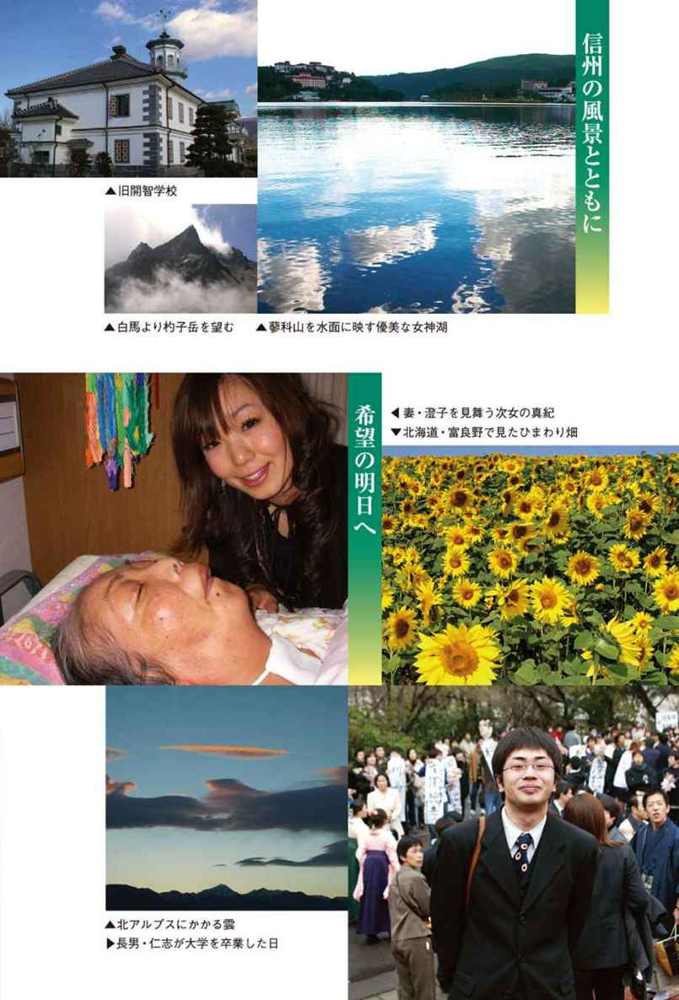
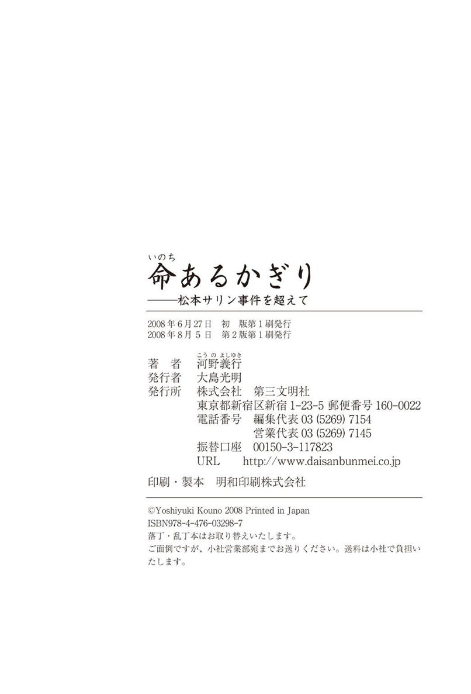

| 命あるかぎり : 松本サリン事件を超えて | |
| 河野義行 | |
| (2008) | |
命あるかぎり
松本サリン事件を超えて
河野義行

この電子書籍は、縦組みの底本を元に作成しました。
プロローグ───ユリの花束
泊まりがけの講演から戻ってくると、たまに庭がすっきりとしていることがある。
庭のマツやイヌツゲ、カエデなどの枝が切りそろえられ、雑草がていねいに抜かれていて、落ち葉もきちんと掃かれている。よく見れば、熊手の竹の目がきれいに残っているところもある。
〝また藤永君が来てくれていたんだな──〟
なんだか専属の庭師のようになっていて申し訳ない気がしないでもない。
藤永孝三君は、オウム真理教の元信者である。
庭仕事が得意だということで、毎月わが家に来ては、庭の手入れをしてくれるようになったのである。カギの置き場所を教えてあり、私がいないときでも自由に家に入り、泊まってもいいと話をしてあるのだ。
彼は、松本サリン事件の実行犯ではなかったが、わが家の隣の駐車場からサリンガスをまくのに使われた噴霧車を製作した人物である。裁判で十年の実刑が確定し、二〇〇六年の三月に刑期を終え出所したのだ。
山梨県の上九一色村（当時）にあったオウムの教団施設にいたある日、一枚の図面を見せられたのだという。
彼は、たまたま溶接の技術をもっていたため、その図面どおりに保冷車を改造する仕事を頼まれたのだ。なにやらそれは、農薬かなにかの液体を霧のように撒布する噴霧車のように感じたという。
彼は、複雑な構造の図面を見て、なにか危険なものかもしれない、と思ったそうだ。しかし、教団の命令は絶対だった。拒否することなどできず、図面どおりに保冷車にいろいろな部品などを溶接していった。
しばらくすると今度は、せっかく作った車両を解体しろと言われた。その指示にしたがって車を解体していると、車中に松本市内の地図があったのが妙に記憶に残った。
それから何カ月かしたとき、松本で毒物がまかれて人が何人も死んだという事件があったらしい、という噂を教団内で耳にした。彼の頭の中で、一瞬にして、その噂と改造車両や松本市内の地図がつながった。
〝教団が関与しているのかもしれない!? どうしよう。オレは知らなかった。オレはただ教団の命令にしたがっただけだ......〟
後悔の念がぐるぐると駆け巡り、すぐにも逃げ出したい気持ちになった──親しくなるにつれ、藤永君は、そういう話をぽつりぽつりとしてくれた。
私が藤永君と初めて会ったのは、彼が出所してきてから三カ月後の六月のことだった。
松本サリン事件が起こったのは一九九四年六月二十七日の深夜だったが、七～八年くらい前から毎年、アレフ（オウム真理教の現在の教団名称。アーレフを経て二〇〇八年五月に改称した）の何人かが、二十七日前後に妻の澄子の見舞いに来てくれるようになっていた。二〇〇五年は、六月二十六日に来るという連絡とともに、藤永君もいっしょに同行したいということだった。
その日は、いくつかの雑用を済ませて居間の時計を見ると、約束の時間の少し前だった。ちょうどいいか、と思って門の外に出ると、隣の駐車場の前には、もう彼らが来ていた。六人ほどの人の輪の中に、真面目でおとなしそうな痩身の男性が、花束を抱えて少し伏し目がちに立っていた。
彼に違いない、と思った。
いつものように、澄子がいる療護施設「ささらの里」に直接行くのではなく、サリンがまかれた隣の駐車場の前に集ったのは、噴霧車を作った藤永君のたっての願いだったのだろう。彼は自分が作った噴霧車が使われた場所に立ちたかったのだ。そこからまかれたサリンガスによって命を奪われた人たちの冥福を祈り、いまなお後遺症に悩んでいる人たちに心からのお詫びの気持ちを伝えたいと思ったのに違いない。
後で彼から聞いた話では、獄中で私が書いた手記を読み、どうしても私の家を訪ねて、謝りたいという気持ちになったのだそうだ。出所してから、私の住所を聞こうと考えアレフに連絡をとった。すると、六月二十六日に、みんなでお見舞いに行く予定にしているということを聞き、自分も同行させてもらうことにしたという。
駐車場での献花を終えると、家に上がってもらった。藤永君は、緊張でガチガチに体をこわばらせていた。それは見ているだけで気の毒なほどだった。
居間に通すと、彼は、
「ここに訪ねてこられる立場ではありません。でも、早く花束をもって訪れたいと思っていました......」
そう言うだけが精いっぱいで、後はうつむいてしまった。
私にとって、妻の回復を願うことがすべて。彼がやったことに対しての恨みはなに一つなかった。第一、彼はすでに刑期を終えてきているわけだから、社会的にも罪のつぐないは終わっている。
私は、彼がなにをしたかよりも、逮捕されてからのことを聞いてみたかった。
「そんなに硬くならなくていいよ」
と、彼の緊張がほぐれるように雑談をし、少し落ち着いたのを見計らって、「それにしても、なんで捕まったの？ 逮捕されたきっかけはなんだったの？」と、聞いた。やはり彼も別件逮捕だった。
地下鉄サリン事件が起こり、松本サリン事件も含めサリンガスをまいたのはオウム真理教であることがわかってからは、つまり〝河野犯人説〟がなくなってからということだが、警察はオウム信者と見ればだれ彼の区別なく逮捕するという状況が生まれた。極端にいえば、レストランでナイフとフォークをもって食事しているだけで「銃刀法違反」になったくらいだった。
彼も、密教で使われる「金剛杵」という先の尖った法具をもっていたことが「銃刀法違反」での逮捕の理由になったそうだ。
サリンの噴霧車を製作した人物ということで、検察の取り調べのときに「自分のやっていることの危険性を知っていたか」と聞かれ、うまく誘導にのって「はい」と答えた。それで起訴され、裁判で十年の実刑を言い渡された。教団に言われたまま車両を改造し、それがたまたま噴霧車だったということで十年の実刑。
「あんたもツイてないね」
そう言うと、ようやく彼の表情もほぐれてきた。
その十年の刑務所での生活で、いろいろな作業をした。なかでも植木の剪定作業は面白く、一人前の技術を身につけたのだそうだ。そんな話をする余裕も出てきたようだ。
そのとき、たまたま同席していた東京の友人が、「そんな技術があるのなら、ここの庭の木の手入れをすればいいじゃない」と言ったのだった。
「それはいいアイデアだなあ？」と私が言うと、「やらせてもらっていいんですか？」と信じられないような顔をした。
驚く彼に、家のカギの場所を教えて、こう話した。
「もちろん。好きなときに来て、自由に庭の手入れをしてくれれば大助かりだわ。僕がいなくても冷蔵庫にビールぐらいは入れておくから、勝手に飲んで、泊まっていってもいいよ。寝る部屋は二階に用意しておくから」と笑いながら言った。こうして、彼は、わが家の庭師をかって出てくれることになった。
藤永君が次に来たのは、八月の初旬の雨の日だった。私が講演から帰ってくると、彼はびしょ濡れになって木の枝を切っていた。雨の日ぐらい、のんびり過ごせばいいのに、申し訳ない気持ちでいっぱいだった。翌日は私も庭に出て、「この紅葉の枝を切ってよ」とか、「枯れ葉を集めてよ」と指示し、いっしょにせっせと働いた。
それから二週間ほどして、お盆にもまた彼はやってきた。
この前の作業に対するお礼にと、乗鞍の渓流に連れて行き、そこで、イワナ釣りを楽しもうと思ったのだ。このときは、テレビ局のスタッフも取材で同行した。
彼はイワナ釣りが初めてとのことなので、イワナのポイントやエサの流し方などを説明し、数匹を釣り上げることができた。私も同じ数を釣り上げたころ、テレビ局の編集の都合で切り上げることになった。私は後ろ髪を引かれながらも、そういうことなら仕方がないと、帰ることにした。そして、このときに彼は完全にオウム真理教から脱会したことを確信した。
家に帰ると、京都にいる長女の真澄と東京にいる長男の仁志が来ていた。子どもたちに藤永君を紹介した。
「元オウム真理教の信者で、サリンの噴霧車を作って十年間刑務所にいた藤永君です」と、二人がどんな反応をするのかなと思いながら、ちょっと過激な言い方をした。
ところが二人とも、「真澄です」「仁志です」と、いたくふつうにあいさつをする。その後、みんなで温泉に行き、いっしょの食卓で食事もした。彼の過去のことなど、まったく気にもしていない様子なのだ。
わが家には、もう一人、次女の真紀という娘がいる。タイのバンコクで暮らしていて、このとき彼女だけが帰ってきていなかったのだが、昨年の一月に用事で帰ってきた。
ちょうど私が講演に出かけたあと、偶然にも藤永君がやってきたのだった。私が帰ってきたときは、もう藤永君はいなかったが、真紀は「ご飯もつくって食べてもらったし、お風呂も沸かして入ってもらったから」と、飄々として報告するのだった。やっぱり三人ともわが家の子どもたちだと、妙に納得した。
子どもたちばかりではなく、わが家に集ってくる友人たちも同じだった。
「この人、オウムの人？」
「そうだよ、元ね」
そう言っても、まったく気にせずに藤永君と食卓を囲み、「こっちのお皿の料理も食べてみて。おいしいから」と、手料理が盛られた皿をまわしたり、ビールをついだりするのだ。
私は私で、「おーい。藤永君、コーヒーいれてきてよ」と、つい気軽に頼んだりする。
彼も豆をひいてもってきて、「こんな感じでいいですか」と豆のひき具合を私に見せるのだった。
こういう雰囲気が、彼にとっては居心地がいいのかもしれない。いまでは、わが家を訪れる頻度は子どもたち以上になっている。
彼は、わが家の庭を手入れに来るときには、必ずユリの花束をもってきてくれる。ユリは澄子が好きな花の一つである。ささらの里（身体障害者療護施設）の澄子のベッドサイドにユリを活け、手足のマッサージをする。彼は、心の中で澄子にどんなことを話しかけているのだろう。それは想像できないが、澄子の存在が彼の新たな人生への大きな後押しになってくれていればいいなと思う。
彼が澄子を気遣い励ましてくれるとき、同時に彼も澄子からなにかのよいエネルギーを受けているに違いない。私は、そう信じている。
それは、私自身がそうだからである。
澄子を心配して元気づけるために来てくれる人は、どんな人でも歓迎する。それが私の基本的な姿勢である。アレフの人たちから澄子の見舞いの申し入れがあったときも、私には拒む理由はなかった。快く承諾してから、毎年、見舞いは続いている。
私は、いまも講演などで家を空けないかぎり、毎日、澄子の元に通っている。歯を磨き、髪をブラッシングし、手足のマッサージを続けながら、その日のわが家の出来事や世の中のニュースなどを語っている。妻の記憶に空白部分をつくらないためである。ベッドサイドのオーディオから音楽を流し続けることも忘れない。
ＣＤを並べた棚には、アレフからもらったＣＤもある。アレフの面々が澄子のためにと、癒しの曲を作曲した自家製のＣＤである。もちろん、このＣＤも流している。
たとえ松本市の市長であろうが、アレフの面々であろうが、澄子を気遣ってくれる気持ちに、なんのちがいもないからだ。
Ⅰ オウムとサリン
オウム真理教の開祖である麻原彰晃（松本智津夫）被告の死刑が確定したのは、二〇〇六年九月のことだった。弁護士側の特別抗告を最高裁が退けるという形で、控訴審が審理されないまま麻原被告の死刑が確定した。
〇四年二月、麻原被告は東京地裁で死刑判決を受けた。
その後、弁護側が期限内に控訴趣意書を提出しなかったため、東京高裁は〇六年三月に控訴を棄却。高裁は弁護側の異議申し立ても退けたので、審理の最後のよりどころは弁護側の特別抗告だけになったのだ。これを最高裁が退けた、ということである。
麻原被告は、この長い裁判の間、主尋問や反対尋問で沈黙するか、不規則発言を繰り返すだけで、結局は事件についてはなに一つ語らなかった。多くのマスコミは、審理を十分に尽くせなかった司法を批判し、事件の真実が明らかにされなかったことに対する徒労感や物足りなさを書き立てた。
私も、報道各社から感想を求められたが、どのメディアに対してもこれまでと同じように、麻原被告の裁判での沈黙を批判することはしなかった。メディアが期待しているのは、麻原被告に対する、血を吐くような恨みの言葉なのだろう。そう考えると、私はこれまでずっと彼らの期待を裏切り続けてきたことになる。
私は、裁判が始まった当初から関心をもって裁判の進展を見続けていこうと思ってはいたが、麻原被告に対する恨みの気持ちは消えてしまっていた。
こんなにもひどい被害を受けたのに、このうえさらに事件の首謀者を恨み続けるような人生の無駄はしたくないと考えているからだ。
人を憎んだり、恨んだりすることは、かぎりある自分の人生をつまらないものにしてしまう。さらに、その行為はとてもエネルギーがいることだ。それだけのエネルギーを使うのなら、澄子の介護も含め、もっと別な、より有意義なことに使いたい。それが私の本音なのである。
ただ、控訴審の実質審議が行われずに刑が確定してしまったこと、もう一ついえば、麻原被告に法的な訴訟能力があるとする裁判所の決定が本当に中立公正な形で行われた決定だったのか、という点の二つに関しては、どこか納得のいかない消化不良のような思いをもっていることも事実だ。
しかし、麻原被告の口から事件の真実が語られなかったということに対しては、心情的にはきわめて不満だが、それを特別に問題だとは思っていない。もともと私は裁判で事件の全容がわかるとは思っていないからである。
それは「オウム裁判」だけではなく、あらゆる裁判でもいえることである。裁判で明らかにされるのは、検察の起訴事実である。
たとえば、被告がその犯罪、殺人なら殺人をやったのかどうかという判断だけだ。その判断もときには間違うこともあるわけで、審理は慎重に重ねていかなければならない。だがいくら慎重な審理を重ねても、そこで問われているのは犯罪の立証で事件の全容の解明ではない。
どんな事件でも、事件そのものにはいろいろな要素が複雑にからみついている。それをかぎられた時間でしかない裁判という場で解明するのは無理だろうし、実際に公判中に自分にとって不利になるような事実を被告が話すわけもない。
もし事件の真実を話すとするなら、それは事件が時効を迎えた後や、被告の有罪が確定し、刑期を終えた後で、被告がもうなにを話しても社会的な不利益を受けることもないという環境になってからだと思う。
そういうことを考えると、オウム事件の全容を明らかにするのは、息長くこの事件を追いかけているジャーナリストの人たちの仕事だといえるのではないだろうか。
麻原被告が主尋問や反対尋問でなにも語ろうとしないのは、被告の意志で行われている以上は仕方がないことである。黙秘は被告に与えられている権利だから、麻原被告がその権利を行使したからといって、だれもそれを批判することはできない。私には、麻原被告にとって、オウム真理教の開祖としての立場を維持する唯一の手段が黙秘であり、不規則発言や不規則な行動のように思われるのだ。
私は、九八年三月四日に行われた麻原被告の第三回公判を傍聴した。この当時、市民の反応には、「麻原被告の死刑は当然」「死刑だけではあきたらない。裸にして市中をひきまわせ」などという乱暴な意見であふれていた。マスコミの論調も麻原被告へのバッシング一色であった。
そんななかで、私が麻原被告を呼び捨てにすることなく、麻原さんと「さん」づけで呼んでいることも多くの人たちに不可解さを与えていたようだ。
私が「麻原さん」と麻原被告を呼んでいたのは、けっして尊敬の意味での「さん」ではなく、あくまで日常私たちが他人に対してふつうに使う「さん」だ。彼を呼び捨てにするほど、私は麻原被告を意識していない、ということである。
第一、当時、彼は「被告」であっても、まだ「犯人」ではなかった。事件の犯人とされるのは、公正な裁判によって有罪が確定したときからであり、それまでは無罪が推定されている。つまり、有罪の判決が出るまでは、被告は推定無罪であるというのが日本の法の原則なのである。そう考えると、よほど親しくないかぎり、他人をむやみに呼び捨てにすることは私にはできない。
私は、松本サリン事件の被害者だった。しかし、事件の発生直後から被疑者として扱われてきた。かぎりなく黒に近い灰色だという予断のなかで、まるで「有罪」であるかのようなマスコミの大合唱にさらされたのである。そういう立場に立たされた経験がある以上、私が麻原被告を犯人と決めつけ、予断をもって呼び捨てにすることは、私を犯人と決めつけた人たちの行動を認めることになってしまう。この思いもあって、私は彼を「さん」づけで呼んでいる。
仮に、麻原被告が検察の起訴事実のとおり罪を犯していたとしても、それに対して罰を与えることができるのは、裁判所のみである。警察やマスコミ、ましてや〝世間〟などではないのだ。
私は、この「推定無罪」の原理原則を守ることの重要性をずっと訴え続けてきたし、いまも訴えている。あの「疑惑の銃弾」の三浦和義さんや「和歌山毒物混入事件」の林眞須美被告などの支援をしているのも、同じ思いからだ。
林眞須美被告の裁判では、彼女が保険金詐欺をしていた事実は立証されてはいるけれど、彼女がカレーにヒ素化合物を入れたということは立証できていない。状況証拠だけで、有罪であるかのようなイメージがつくられているのである。そのイメージを大きくしたのはマスコミだが、そのイメージに踊らされた〝世間〟の人びとによって彼女の自宅の塀にはさまざまな落書きをされ、ついには自宅までも放火され、焼かれてしまった。
松本サリン事件の渦中、私の家にも毎日のように嫌がらせ電話や無言電話があり、二十通を超す脅迫の手紙が送られてきた。それと同じことが、いまも起こっているのだ。日本が法治国家である以上、法によって定められている原理原則にしたがっていくべきだし、それが社会のルールだと思う。そのルールにしたがいたくない、あるいは現実と合わないとするならば、法を変えることを主張するべきだと思っている。
冒頭に述べたように麻原被告の死刑は確定した。しかし、私は、麻原被告にとって極刑は、はたして死刑なのだろうかと考えることがある。
死刑は、合法とはいえ、人が人を殺すことには変わりがない。裁判では人が人を裁くのであるから、間違いもありうる。
なによりも私自身、事件の渦中では最悪が重なったとき、自分に死刑判決が下ることもありうると考えていた。また、実際に死刑が確定し、再審によって無罪が確定した冤罪の被害者にも会い、話を聞いた。そのときの実感からも、これまでに冤罪のままで死刑になった人もけっして皆無とはいえないだろうと思っている。
さらに死刑が犯罪の抑止になるという議論もあるが、私はこの考え方にも疑問をもっている。犯罪を起こそうとしている人が、自分の量刑まで考えて犯罪を実行するとはとても思えないからである。なによりも、死刑制度があっても、この国の凶悪犯罪は減少していない事実がある。そういう意味から、私は死刑制度には反対である。
麻原被告についていえば、彼は自称であれ自分のことを「最終解脱者」と言っている。その教義は輪廻転生であり、本当に解脱したかどうかは置くとして、彼自身もそれを信じていると思われる。つまり、彼にとって死刑執行は現世の終わりではあるが、来世への出発点でもあるとも思える。そうとするなら、死刑はけっして麻原被告にとっては極刑にはあたらないといえるだろう。
たとえ仮に、彼が輪廻転生を信じていないとしても、死ぬことが本人にとっての救いとなることもあるのではないだろうか。それは私の経験からもいえることだ。あの事件の渦中、マスコミの追及や警察からの執拗な捜査を受けていた時期に、私も〝いま死ねたら楽だろうな〟と考えたことがあるからだ。
こうした観点から考えてくると、死刑が麻原被告にとって極刑であるとはいえないと思えてくるのだ。私は、麻原被告にとって最もつらい刑は終身刑ではないだろうかと考えている。死ねないかぎり来世への転生もできず、自分の犯した罪をずっと自分に問い続けることになる。
その意味では、私は、仮に麻原被告が裁判で無罪になっても気にはしない。自分がしたことは自分が一番よく知っているからだ。そのうえでウソをつき通して無罪になっても自分はだませないだろうと思う。無罪になっても、死ぬまで自分を責め続けるということでは終身刑と同じだということだ。
もし仮に自分で自分をだますことができたとしても、偽りの生を生きるなど人が生きるうえでこれほどつらいことはない、と私は思う。そのつらい生を生きなければならないならば、それもまた罪を背負った姿だといえるだろう。罰の本質は「自己制裁」だと思う。結局のところ、自分が犯した罪に対する反省も悔恨も自分もちだ、ということである。
日本には終身刑は存在しない。だから、これはあくまでも空論だが、日本でも死刑の上に、あるいは下に終身刑があってもいいと思う。もちろん死刑を廃止して、終身刑を最高刑とするようになれば、それが一番いいのだろう。
ともかく、私は、麻原被告に対しては憎悪の感情ももっていない。なによりも、サリン事件の首謀者が彼なのか私にはわからない。
〝もし、あの二つの事件を、あなたがやったのなら、あなた自身が責任を負って、その罪を受ければいい。私の人生とは別のもの──〟
そう、考えているからだ。
相手に強い関心すら示さず、同じ土俵に上がって怒ったり、恨んだりなどもしない。それが、相手にとっては一番不快なことだろう。そういう意味では、私はサリン事件のどの被害者よりも冷たい人間かもしれない。
私が麻原さんに言いたいことは、ただ一つだけだ。それはアレフの信者に対して、オウム事件のよりどころとなった「危険な教義」＝タントラ・ヴァジラヤーナ（オウム真理教の最高位の修行方法。グル＝麻原被告＝と一体一の関係において成り立つ修行とされ、殺人を正当化する根拠ともなった教義が含まれている）の明快な破棄声明を出すことである。
アレフは、いまも団体規制法の観察処分延長を受けている。それを盾に現実に信者に対する社会的な差別、法にすら抵触するような不等な扱いなど、人権侵害としかいえないことが行われている。
なぜ団体規制法の観察処分が続いているのか。その大きな要因は、公安調査庁との教義をめぐる主張が対立していることにある。アレフ側はそんな危険な教義はすでに破棄したというのだが、公安調査庁はアレフがいまだにタントラ・ヴァジラヤーナという危険な教義を保持しているといい、開祖である麻原被告の影響力はいまだに大きいと見ているのだ。
自分の弟子たちを救おうと思うのなら、麻原さん自身が自分の言葉で危険な教義の破棄を表明することである。公安調査庁自体が麻原被告のアレフへの宗教的影響力の強さは認めているのだから、その意義は大きい。それが弟子たちに対する宗教者としての道義的責任であると思う。彼は弟子を救う気持ちすら失ってしまったのだろうか。
Ⅱ 犯罪被害者として
一九九八年三月に行われた麻原被告の第三回公判を傍聴したことは、すでに述べた。このとき私は公判の感想として、あくまでも「推定無罪」の原理原則を守ることと、法に委ねることの重要性を述べ、マスコミの報道が苛烈にならないように話した。
同時に、私は犯罪被害者に対する救済の制度的な不備を指摘し、犯罪被害者救済制度を立法化することがいかに急務であるかを訴えた。
どちらかといえば私は公判の感想よりも、犯罪被害者救済の立法化の訴えに情熱を注いで話したのだった。
しかし、記者たちの間からは、「これでは記事にならないな」という声も聞こえた。私は、そうつぶやいた記者に対して残念な思いがする。私の訴えに敏感に反応して、犯罪被害者やその家族が置かれている状況を取材すれば、きっといいリポートが仕上がるに違いないと思ったからである。
当時、犯罪被害者や家族は、ほとんどなんの補償もなく放っておかれている状態だった。あるのは「犯罪被害者等給付金」という一時金だけだった。一家の大黒柱が犯罪被害に巻き込まれ、死亡するようなことでもあれば家族はすぐにも路頭に迷ってしまう。
ひるがえって加害者はというと、自由で快適な生活とはほど遠いが、刑務所で、刑期が終わるまで三食つきで暮らせるのである。着るものも用意され、洗濯までしてくれる。運動の時間もあり、病気になれば医者が来て必要な治療をほどこしてもくれる。しかも、それらの費用はすべて国費でまかなわれるのである。
犯罪被害者の置かれている立場と比べると、その環境の差は歴然としている。これまでずっと犯罪被害者とは、国家にとって犯罪を立証するための〝証拠物〟にすぎない存在だったのである。裁判が済めば、もう用なしというわけだ。
私が、そうした状況に置かれている犯罪被害者や家族の救済を訴えなければならないと思ったのは、だれもが犯罪被害者になる可能性があるからだ。これは、すべての人にとって他人の問題ではなく、自分の問題なのである。そのことを、私は身にしみて体験した。
松本サリン事件が起こるまでは、私自身、犯罪被害や冤罪という言葉は推理小説やテレビのニュースの中だけのものだと思っていた。それが突然、自分の身のうえに降りかかったとき、これはだれの身のうえにも、いつ起こっても不思議ではないということを知った。だれもが、いつなんどき犯罪に巻き込まれるかわからないのである。それは、警察白書の犯罪統計を見ても明らかなことだ。
犯罪に巻き込まれ、被害者となったとき、いったいどんなことが起こるのだろうか。それを考えてみよう。
一般的にいえば、犯罪被害はなんの予告もなく突然、訪れる。殺人であったり、傷害であったり、あるいはレイプなどの性犯罪であったり、強盗や詐欺事件であったりと、犯罪の種類は違っても、被害を受けた本人や家族は重大な被害を受けることになる。
さらに周囲の無責任な噂やマスコミの過剰取材や報道によって、ストレスや不快感が助長されることもある。犯罪の二次被害である。
犯罪被害の結果として、体に障害が残れば医療費が大きな負担になるし、症状の如何によっては職を失ったり、転職を余儀なくされたりする人もいる。犯罪に巻き込まれることで経済的困窮に陥ることもあれば、精神的ショックによる身体の不調、さらには捜査や裁判による精神的、時間的な負担を強いられることもある。
私の場合は、治療費の負担が大きくのしかかってきた。
わが家では五人の家族のうち、サリンガスの被害で四人が入院した。事件が発生してから一週間の医療費総額が三百万円にもなり、そのうち自己負担が六十万円におよんだ。これは、いまも意識混濁状態である妻の蘇生処置や気管切開などの手術費用がかさんだためだったが、それ以後も、事件から一年半の間は毎月の医療費の自己負担は十五万円にもなった。私自身も入院し、十カ月は仕事ができず、収入が激減し生活が圧迫された苦しい経験がある。
また、世間の噂で、私が妻に高額な保険をかけ、妻を殺そうとしたなどいう根拠のない話がもっともらしくささやかれ、私や家族は悔しい思いをした。
いま思うと、私は、私を加害者だという予断をもって見ていた警察に犯罪被害者等給付金を申請していたことになる。
サリン事件当時、この犯罪被害者等給付金は、犯罪によって死亡するか、澄子のように高度障害を受けた場合にしか出ないというものだった。
しかも一時金、いわば見舞金だといえる。死亡の場合ですら最高額で一千数百万円ほどのものなのだ。澄子のために出た一時金は約四百十七万円だった。それだけでは、一家の大黒柱が倒れたような場合だと、どうすることもできないだろう。私の場合、この給付金は、東京の病院に妻を二回（延べ四カ月）入院させたとき、差額ベッドの費用代だけで終わってしまった。
もちろん民事訴訟で加害者に相応の賠償金を請求することもできるが、加害者にいつも賠償能力があるとはかぎらない。賠償能力がない加害者による犯罪の場合、大黒柱を失った家族は多くの場合、生活権、いや生存権までも奪われるような事態に陥ってしまうが、国からの経済的救済はその一時金以外には出ないのだ。
犯罪被害者等給付金制度の発端は、七四年八月三十日に起こった過激派による無差別爆破テロである「三菱重工ビル爆破事件」だった。
爆発が起こったのは昼休みが終わる時間帯で、東京・丸の内の三菱重工ビル前の通りはオフィスに戻ろうとするサラリーマンやＯＬであふれていた。突然のビル爆発で、八人が亡くなり、四百人近い人たちが重軽傷を負ったのだ。
この事件から、犯罪被害者を救済するための必要性が叫ばれ、犯罪被害者等給付金制度について論議が始まったのだった。そして八〇年五月になって「犯罪被害者等給付金支給法」が成立し、翌八一年に法が施行された。また、犯罪被害者の子どもで、修学が困難な児童を支援するため、「財団法人 犯罪被害者救援基金」も同年に設立された。九五年、東京で地下鉄サリン事件が起こるまで、この不十分な救済状況は変わらなかった。
犯罪被害者本人やその親族の給付金申請を裁定するのは各都道府県の公安委員会で、しかもこの法律での支給対象者は故意の犯罪行為によって死亡した人の遺族や重度の後遺症（障害等級一級から四級）を受けた被害者にかぎられていた。すでに書いたように、これは国による見舞金であり、被害を補償するものではなかった。その後、日本での被害者救済は大きな進展もなく推移し、ほかの先進国よりも二十年は遅れているといわれ続けてきたのだった。
私は、地下鉄サリン事件が起こってから、松本・地下鉄両サリン事件の被害者を支援する「リカバリー・サポート・センター」というＮＰＯの立ち上げにも関わり、もっと確かな犯罪被害者のための救済制度をつくることを訴えてきた。
その一方で、センターでは、サリン被害者の健康状態の定期的な追跡調査を続け、被害者やその家族の心のケアを考え、チャリティー・コンサートを開いて、収益を被害者の支援に充てるなどの活動もしている。
本来、これらは政府がやるべきことだと思うのだが、センターのみんなは政府がやらないのなら、だれかがやらなければならないという思いでいるのだ。
わが家は、幸いなことに、澄子の介護や子どもたちの学費も含め経済的にはなんとかやってこられたし、いまもやれている。私も自分たちのことではなく、今後起こる可能性がある犯罪のために救済法の制定を訴えているのだ。サリン事件のようなテロ犯罪や行きずりの凶悪犯罪が起こらない保証はどこにもないのである。
同じように、行きずり殺人などの凶悪な犯罪や飲酒運転での悲惨な交通事故などが多発するようになり、すでに全国に犯罪被害者の団体や組織がいくつも結成されてきている。そうした団体が声を上げるなかで、九六年二月に警視庁は「被害者対策要綱」を策定し全国の警察に通達した。これを機に、各都道府県警察に「被害者支援センター」が設立され、犯罪被害者へのサポート体制が一気に広がった。
さらにその後、犯罪被害者保護のための二法が公布され、被害者の裁判傍聴や法廷での意見陳述ができるようになった。また、犯罪捜査情報も捜査に支障のない範囲で被害者に提供されたり、犯罪被害者等給付金の金額や支給範囲も広がったりした。
そして、〇四年十二月には、私たちがずっと主張し続けてきた「犯罪被害者等基本法」が、ようやく産声をあげた。
しかし、やっと基本法ができたというだけである。手放しで喜べる段階には来ていない。まだ考えていかなければならない問題がいくつも残されている状態なのだ。
その一つは、被害者への金銭的なサポートに関して、現行の犯罪被害者等給付金制度の拡充や医療費等の支給・補償はうたっていても、そのための資金をどこからもってくるのかが決まっていないことである。
もう一つの問題は、こういう制度があることや各都道府県警察に「被害者支援センター」があることなどが、広く知られていないという問題である。じつは、どの支援組織もインターネットのホームページで活動内容などを広報しているのだが、支援を必要としている人たちがその支援組織までたどりついていないのが現状なのである。
そうした支援団体が十分な広報活動をするようになるためにも、その運営費を税金でまかなうようにするべきだと思うし、常に新聞各紙の決まった紙面に広報を掲載したり、犯罪報道時に、その犯罪が起こった地域の支援センターの連絡先を、テレビニュースでは画面にテロップで流したり、新聞の場合は記事の最後や見出しの横に記すようにしていくような試みも必要だと思う。
そして、なにより考えなければいけないのは、被害者やその家族の心のケアをどうしていくか、ということだと思っている。
犯罪の被害のみならず交通事故や医療事故も含め、自分の経験したことのない突発的な出来事に巻き込まれたとき、人は自分の知識の範囲内でもがき、納得できる回答が得られずに孤独に陥ってしまうということが往々にして起こる。ときとして、その絶望感から死をも選択しかねない状況に追い込まれることすらあるのだ。
日本では、年間約三万もの人が自ら命を絶っているのである。全国で一年間に起きる殺人事件は千三百件前後、交通事故の死者数が七千人といわれている。これらに比べても、自殺者の数が圧倒的に多いことに胸の痛みを感じる。
どうして自死という道を選んでしまうのだろうか。
原因はそれぞれ異なっていても、共通していえることは、その人たちが問題と対峙し、なす術もなく、精神的に追い込まれ孤独に陥ってしまったのだと思う。
私も、あの事件で、全包囲網的なマスコミの報道によって犯人扱いをされたとき、連日の脅迫電話や手紙にさらされているなかで、死ねたら楽だろうなと思ったこともあった。しかし、実際に死を選ばなかったのは、孤独ではなかったからだと思っている。私の潔白を信じてくれている人たちの存在が私の大きな支えになったのだ。
ところが、そうした支えがない場合、精神的に追い込まれていくと人は正常な判断ができなくなる。結果、犯罪に走ったり、自殺に至ったりすることになるのだろう。
世間では、事件や事故が起こったときに初めて当事者の置かれていた環境に注意が注がれる。だが、それらが起こる前に、人知れず悩んでいる人が多いことを行政は知る必要があると思う。
全国には民間の相談機関は数多くあるが、ここでも多くの悩む人たちがその窓口にたどり着けない現実があるような気がしてならない。たとえたどり着いたとしても、どの機関でも納得のいく相談を受けられなかったり、門前払いされたりしているのが現状ではないだろうか。それぞれの機関からすれば、管轄外の相談者が来ることが多いというのかもしれない。
しかし、そうであるならばなおさら、犯罪被害者の心のケアも含めて、相談者が本当に必要な相談の窓口に自然にたどり着くことができるようなシステムの構築こそが大切なことだと思う。
犯罪被害ということにかぎっていえば、泥棒までいれて犯罪の発生数を考えると、都道府県によりバラツキはあるが、一年で一人あたり〇・〇一件以上の割合で私たちは犯罪に遭遇する計算になる。単純な計算として、十人いれば〇・一件、三十人いれば〇・三件、百人いれば一件。つまり、百人もいれば一回はだれかが犯罪被害に遭うという計算になる。何度もいうように、犯罪被害に遭遇するということは、けっして他人事ではないということなのだ。
いま犯罪被害者の支援組織が各県にできている。それを心のケアまで含めてできる「本当に役立つ組織」に育てていくのも、私たち市民の役目だと思うし、行政の責務でもあると考えている。
今後はもっと、さまざまな組織や市民団体が、それぞれ単独に存在するのではなく、お互いにリンクしながら複合的な機能を果たしていくことが大切になっていくと思う。そうすることで「だれもが救われる社会」、いまの流行りの言葉で言い換えるならば、「Ｗｉｎ Ｗｉｎ」の社会が築かれていくのではないだろうか。
Ⅲ 家族の絆
たとえば事件から何年目というマスコミの取材を受けたとき、あるいは澄子の手足をマッサージしているとき、本当にごく稀だが、わが家にとってあの事件とはいったいどんな意味があり、なにを残したのだろうか、と考えることがある。
私自身は、あの事件を通して、冤罪や報道被害の当事者になったことで、犯罪被害者の救済、報道と人権の問題などについて真剣に考えるようになった。そうした問題の改善に向けての発言や運動をしていくなかで、多くの人たちとも出会い、さまざまな経験を重ねながら、自分が社会で果たすべき新たなフィールドが広がった。
では、事件以降ずっと意識混濁状態が続いている澄子にとってはどうだったのだろうか。三人の子どもたちにはなにをもたらしたのだろう。
そして、私たち家族にとって、事件はどんな意味をもち、なにを残したのか。
そんなことを、ふと考えるのだ。
あの事件が起こった日、一九九四年六月二十七日は本当にうだるような暑い日だった。
建設用機械やフォークリフトなどの物流機器などを販売する会社で営業をしていた私は、この日、なんとか夜八時前に帰宅することができた。玄関を入ると、妻に声をかけてすぐに冷蔵庫から缶ビールを取り出した。
八時前に帰ったときにだけ飲むことを許されていた缶ビールが乾いた喉にじつに気持ちよかった。食事を終えると、居間で読書をした。いつもどおりこのまま静かに一日が終わっていく、はずだった。
ところが、十一時になる少し前、澄子が、「ちょっと気分が悪い」と言って、居間で横になった。そのとき、裏庭の犬小屋のほうからカタカタという音がした。私は、どうしたんだろうと、廊下に出て窓から裏庭をのぞいた。犬小屋に目をやると、愛犬のピピとヒメが不自然な格好で横たわっていた。
すでにこのときサリンガスが、わが家の隣の駐車場からまかれていたのだ。サリンガスはゆっくりと流れるように風にのり、駐車場からわが家の庭に入り居間に忍び込んでいた。そのガスを、澄子が吸ったのだった。同時に、縁の下の空気抜きの穴からサリンは裏庭の犬小屋にも流れていったのだ。
私が澄子ほどの重症にならなかったのは、裏庭で倒れている犬の体を拭いてやろうと、雑巾やバケツをとりに動いていたので、サリンをもろに吸い込むことがなかったからだと思う。とにかく私は犬の体を拭き、居間に戻った。すると居間で、澄子がピピと同じように口から泡を出し、激しい痙攣を起こして苦しんでいたのだ。
私は慌てて救急車を呼び、「母さんが大変だ。みんな、来い！」と、子どもたちに声をかけた。
救急車のサイレンが聞こえたとき、私も玄関まで出るのがやっとの状態になっていた。でも、どうにか自力で救急車に乗り込んだ。
やがて救急車には澄子が担架で運ばれ、長女と長男も乗り込んだ。救急隊員が到着したときには、澄子は心肺停止状態だった。救急隊員が懸命に蘇生術を繰り返している様子を覚えている。病院に着くと、澄子は集中治療室に運ばれ、私は処置室に運ばれた。後で、母屋の二階にいた長女もしばらく入院したことを知った。これが、事件の始まりだった。
やがて病院がとても慌ただしくなった。サイレンの音、救急車の回転灯の点滅、人たちの怒声や走る足音......。私は処置室で、ときおり遠のく意識の隅で、まるで戦場のような喧噪を聞いていた。
松本サリン事件は、結果的に七人の死者と六百人を超える重軽症者を出す大惨事になった。そして、私は入院中から、かぎりなく黒に近い灰色の人物だと見なされるようになっていったのである。すでに二十九日の朝の新聞には、「会社員宅から薬品押収 農薬調合に失敗か」「第一通報者宅を捜査 『薬品調合 間違えた』と救急隊員に話す」などという見出しが躍っていた。
澄子は生死の境で必死の闘いを続け、私自身もサリン特有の幻覚や頭痛などの症状に悩まされているときに、社会から殺人犯として扱われていたのだった。
脅迫の手紙が「第一発見者会社員」というだけの宛名でわが家に届き、「人殺し」「ここから出て行け！」などいう嫌がらせの電話や無言電話が十分と間を置かずにかかってくるようになった。そんな電話にも子どもたちは、誠実に対応していた。
無言電話にも、「ご用件がないようなら、切らせていただきます」と言ってから受話器を置いた。そして、「何日何時何分、無言電話」、あるいは「嫌がらせ電話あり。内容は......」と記したメモを必ずとった。
長男から、電話番号を変えてほしいと言われた。しかし、私はそうはしたくなかった。自分にやましいところがないからである。
「お父さんはなにも恥ずかしいことはしていないのだから、堂々と胸を張っていればいい。後ろ指をさす人がいたり、嫌がらせ電話をしてくる人がいたりしても、その人が間違っている。そういう人はかわいそうな人だ。そう思って、ふつうに対応すればいい」
入院しているときから、子どもたちにこう話していたのだった。
ひと月ほどの入院を終えて、私は七月末に退院した。それからは自宅で治療を続けながら、いつ逮捕されるか、という警察との気の抜けない闘いをしなければならなくなった。冤罪は本当にどんな人の身のうえにも起こり得るのだという事実を実感しながら、もう一方では、もし逮捕された場合、残された家族をどう守るのか、ということも考えていかなければならなかったのだ。
ありがたいことに会社は、まだ事実関係がはっきりしていないのだから、と私を休暇扱いにしてくれており、減額はされていたが、給料を毎月きちんと振り込んでくれていた。しかし、逮捕されたとなると、会社も辞めざるをえなくなるだろう。そのとたんに、残された子どもの生活費や澄子の治療代などをどうしていくかという問題が出てくる。
私は、貯金の残高を調べ、これまでかけてきた学資保険が解約できるかどうかなども問い合わせをした。そのうえで、長男に貯金通帳、生命保険や学資保険、土地家屋の登記簿謄本などの書類を見せながら、
「いま家にあるお金は、これだけだ。もし、お父さんが逮捕されたときは、貯金をおろして使うといい。それでも足りなくなったら、学資保険を解約しなさい。さらに足りなくなったら、この家と土地を売ればいい。たとえ二束三文でもいい。お前が、売る必要があると思ったら、売っていい」と話したのだった。
当時、高校一年だった長男には少し荷が重すぎるような気がしたが、私がいなくなった後、わが家で一人残る男である長男にそれから先の家の運営を託すことにした。長男が、「うん。任せてよ」と、たのもしいことを言ってくれたのを思い出す。
子どもたち三人と話していたとき、こんな話をしたこともあった。
「お父さんが逮捕された後、もし君たちが大学に行きたいと思ったのなら、三人でローテーションを組んでいくという方法も考えられる。二人が働いて、一人を大学に行かせる。一人が終わったら、次の一人が行くという方法だ」
もちろん、私は、一生懸命に逮捕されないように努力していた。しかし、どんな事態が起こるかわからない。そのためにも万全の用意はしておいたほうがいいと思っていたのだ。そこまで考えていたのは、逮捕は時間の問題とマスコミから言われていたからである。
新聞をはじめテレビや週刊誌など、あらゆるマスコミが「河野犯人説」という予断に立って報道を繰り返していた。中学二年生だった次女は、「お父さんのことをムチャクチャ書いている」と泣いていた。
私は彼女に、「いいんだよ。よく書いてもらうよりも、悪く書いてもらったほうがいい」と、話した。
「どうして？」
「お父さんの潔白がはっきりしたら、マスコミを相手にとって裁判を起こすつもりでいる。いまマスコミがいろいろ悪いことを書いてくれていたほうが、後で裁判を起こしたときに勝ちやすいだろう。お父さんは、お母さんの治療費を全部マスコミから取ってやろうと思っているんだよ」
そう言うと、次女は気持ちが治まったようで、泣きやんだ。
実際、私は警察の捜査の矛先がオウム真理教に向いていった後、あらゆるマスコミを相手どって名誉回復のための闘いを起こした。妻の治療費を取るというのは冗談にしても、徹底的にマスコミと闘い、謝罪を勝ち取らなければ世間に定着した「河野が犯人」というイメージは払拭できないと考えていた。それほど、マスコミの報道は激しかったのである。
そうしたなかで、私がうれしかったのは子どもたちがふつうどおり学校に通ってくれていたことだ。三人が通っているどの学校でも、一切いじめがなかったのだ。
なぜ、いじめが起こらなかったのか。じつは、事件が起こって間もない時期に、三人の学校の校長先生や担任の先生たちが、まだなにもはっきりしていないのだから三人にはいつもと同じように接するようにしよう、と話し合ってくれたのである。
私は、そのことに心から感謝をしている。三人にとって学校は、唯一といっていいくらい気持ちの休まる場所になっていたようだ。
家にいれば、無言電話や嫌がらせの電話がかかってくる。マスコミの取材陣も黒山のように押しかけている。
しかし、学校に行けば、気のおけない仲のいい友だちといつものようにいろいろな話ができるのだ。あのときの三人にとって、学校はとても居心地のいい場所だったに違いないと思う。
この校長先生たちをはじめ、私を休暇扱いにしておいてくれた会社の社長、毎日、子どもたちを励ましてくれていた近くの教会の牧師、また子どもたちがいつでも逃げてこられるようにとマンションを借りてくれていた友人などなど。世間では「河野が犯人」という世論がつくられていたなかでも、私の潔白を信じサポートをしてくれる人たちもいた。そういう人たちがいたからこそ、私は最後まであきらめずに警察やマスコミとも闘えたのだと思う。
いわば「チーム河野」ともいえる仲間の連帯のなかで、私はかろうじて孤立することもなく、それだからこそ絶望を感じることもなく、そのときどきの状況に合わせて、いま自分としてやるべきことを淡々とやっていくことができたのだ。
チーム河野のコアは、言うまでもなく家族五人だった。物言わぬ澄子を真ん中にして、私と三人の子どもたちで一つの目的に向かって団結して闘った。その意味で、あの事件はわが家の家族の絆を強くしてくれた、ということはいえると思う。
そして、もう一つ、子どもたちにとっては自立への大きなバネになったということだ。なかでも私から家の全権を委ねられ、私が入院している間は警察やマスコミとの対応、弁護士事務所との連絡などにあたってくれていた長男は、親の目から見ても事件を通して二まわりも三まわりもたくましくなった。
大人への自立は、年齢ではなく、経験に多くをよっている。そのことが、子どもたちを見ていてよくわかった。
あの事件を振り返るたびに鮮明になってくるのは、事件が起こる十日ほど前に澄子と交わした会話の内容である。子どもたちも大きくなったね、という話から、「お互い、いつ死んでも後悔しないように生きてきたよな」。
私が、そう言った。すると澄子は、「そうね。本当に好きなように生きてきたわよね。でも、あと十年は生きないと、子どもたちの生活に対しての責任が果たせないわよ」と言うのだった。
澄子が言った「子どもたちの生活に対する責任」とは、子どもたちが大学を出るまでは生きていないといけない、ということなのである。
意識不明状態が続く澄子に代わって、私一人でもその責任を果たさないといけない。どこか意識には上がってこない心の深い部分でそう思い定めたことが、あの事件の渦中を闘い抜いた私の支えになっていたのかもしれない。
Ⅳ わが家の子育て
私と澄子は、ものの考え方や生活の楽しみ方がじつによく似ていて、価値観、人生観なども共通していた。家族に関しても、その基本は夫婦だと私たちは考えている。
あくまでも家族の母体は夫婦だと考えていた。子どもはやがて自立し親から離れていくのだから、やはり夫婦というユニットの付属物であるという考え方である。
私は、半分冗談のような口調で、しかし真剣に子どもたちにこんな話をしてきた。
「もし、母さんと君たちが乗っているボートがひっくり返ったとしても、お父さんは母さんを一番最初に助けるから」と。
こんなことを平気で口にするのだから、子どもたちにとって、私はけっこう「ヘン」な父親だと思われていたと思う。自分勝手で、ときに理不尽なことを言ってはガンとして譲らない。頑固で厳しい印象があったかもしれない。それも、子どもたちには、できるだけ早い時期に自立してもらおうと考えていたからだ。言い方を換えれば、子どもを独り立ちさせ、社会に送り出すことが親の役割だと考えていたということである。
私はその時期は高校卒業までだろうと思っていたのだが、澄子は、大学卒業までは親としての責任の範囲と言っていた。私も澄子の思いをくみ取って、大学卒業まではしっかり子どものサポートをしていこうと決めていた。
私と澄子は京都で知り合った。澄子はエレクトーン奏者として活動しながら、教室も開いていた。その教室に私が通い始めたことが私たちの出会いになった。結婚して、松本で暮らすことになったとき、澄子は外で働くことをやめた。
収入の面でいえば、京都時代、澄子の収入は私のよりもはるかによかったのだ。松本に移ってからも、エレクトーンを教えたり、演奏活動をしたりすることもできたのである。しかし、澄子はそれをしなかった。子どもが親離れをするまでは、子どもに全精力を投入しようと考えていたのだ。いつも家にお母さんがいる。そういう安心感を子どもたちに与えたかったのだろうと思う。そうした澄子の子どもたちとの関わりのおかげで、私はわりと自由にすることができたのだった。
澄子は、たまに子どもたちに厳しい叱声を飛ばしていたようだが、基本は子どもたちにはかぎりなく優しく、話がわかる母親だったと思う。
「そういえば、うちでは買ったお菓子をあまり食べたことないと思わない？」
事件が起こってから、母親の話になったときに子どもたちがそう言っていた。この言葉どおり、澄子は料理が好きで、よくクッキーやケーキなども焼いていた。クリスマスになると、特大のクリスマスケーキを十個も二十個も焼いて知人やご近所に配って食べてもらったりしていた。
料理も手抜きはせず、たとえばエビチャーハンをつくるのにも、わざわざ干しエビの出し汁で炊いたご飯を使うのだ。そのくせ、後片づけは苦手なようで、いつも台所には洗い物が山積みになっていた。しっかりしているようで、抜けているところもある。そういう澄子の人間性が、子どもたちにはすごくいい影響を与えたと思う。
ふだんはあまり子どもたちと接する時間が取れない私だったが、そのぶんを取り返すように休みの日には家族でよく出かけた。子どもたちに親と遊んだ思い出はいっぱいつくっておいてやろうと思っていたからである。
澄子も私も自然が好きだったから、キャンプに行くことが多かった。金曜日の夜、だいたいの行き先だけ決めて車で出発した。しばらく走ってテントを張るのによさそうな場所を見つけて泊まっていく。そんな気ままなキャンプだった。
毎年、夏休みは二週間、三週間と、できるかぎり長い休暇をとって、家族で旅行に出かけた。旅行といっても車に道具を積み込んで行くキャンプである。佐渡島や北海道など、ゆっくり時間をかけてまわったのだ。食材は、行く先々で新鮮なものを調達した。漁港の市場で新鮮な魚を手に入れたり、地元の野菜を安く仕入れたり。魚釣りをし、野草摘みをして、大自然のなかで、みんなで眠った。
家のことは澄子に任せておけば大丈夫だと思っていた私に、一度だけ澄子が「家にいるようにしてほしい」と言ったことがある。私が同じ長野県内の上田市で単身赴任をしていたときのことだった。小学校五年生になっていた長男が落ちこぼれてしまったのだ。
澄子が、いま立ち直らなければ、あの子は一生キズを引きずるかもしれないと、「あの子にとって、いま父親が必要なときよ。なにもしなくていい。ただ家に父親がいるというだけでいいから家にいて」と言うのだった。
私は、当時働いていた会社の上田営業所の所長をしていて成績も上げ、会社からは「もう一年、上田にいてほしい」と言われていた矢先だった。だが、いま、長男の立て直しをしなければ、長男はこれから先、劣等感を背負って生きていくようになるかもしれない。会社は慰留のための条件を次々出してきたが、いまは仕事よりも子どものほうが大事だと、会社を辞めて家にいることにした。
雇用保険が出る半年間は働かず、毎日釣りに行ったり、バイクを走らせたりして遊んでいた。長男に対しても特別になにをするわけでもなく、ただときにジロリと長男をにらんでいただけだ。
それでも、彼には、母親の後ろには父親がいるということが伝わったのだろう。だんだん澄子の言うことを聞くようになり、勉強にも向き合うようになっていった。
これが、私が子どものためにやった唯一のことといえるかもしれない。このとき仕事よりも子どもを選んだのは正しい選択だったと思っている。人生には、こういうふうにタイミングを外してはいけないことがときに起きるのだ。そのときに、すべてを捨てても、いまやらなければならないことができるかどうかで、人生の風景も大きく変わっていくのだろうと思う。
澄子は子どもが中学生になるくらいまでは、本当にたっぷりの愛情をもって抱きかかえるように育ててきた。そうして、徐々に子離れをしていき、大学生になったら完全に本人の意思に任せるようにしようと考えていたのだ。これは私も同じ思いだった。
だから、たとえば大学に入学した子どもたちがアパートを借りるときも、私は保証人になって印鑑は押すけれども、どんなアパートなのか見に行ったこともない。住むのは私ではなく子どもたちなのだから、自分で気に入ったのならそれでいいと思う。同じようにアルバイトもするのも勝手だし、しなくてもいい。そのことに干渉する気持ちもなかった。
私の基本的なスタンスは、大学を卒業するまでは金銭的な面倒は見る、ということだけである。大学の入学金、授業料のほかに、生活費は渡すと言ってあった。生活費は、子どもたちに要求されたときに百万円ずつ渡すというのを原則にしている。
「できるだけ長くもたせてほしい」と言って渡すわけだが、同時に、「もし今日渡した百万円をすぐに使ってしまって、明日また百万円ほしいと言ってきたら、家にお金があるうちは渡すよ。でも、家にお金がなくなったら、それで終わりだ。そのときは甲斐性のない親をもったと思ってあきらめてほしい」とも言ってある。
子どもたちに振り込む百万円の使い道も、もちろん聞くことはない。自由に使っていいと言っていた。そうすると、たとえば月々に必要な生活費を少しずつ振り込むよりも長持ちするのだった。
彼らにとっていきなり自分の口座に百万円が入金されるというのは、ちょっとした驚きだったようだ。そんな「大金」でも、当たり前の話だが一万円使えば一万円減っていくのだ。だんだん口座の金額が減っていくということが、自然に子どもたちに経済感覚を身につけさせたのかもしれない。一度振り込むと、「お金がなくなったから、送ってほしい」という連絡はなかなかこなかった。
私も、まだもっているのかな、大丈夫なのかな、と思いながらも、彼らから連絡があるまでは振り込まなかった。
家庭のなかで例外はつくらず一度決めた原則を守る、というのが、わが家のやり方だった。どの子に対しても公平でありたいという思いからである。公平という意味でいえば、長女が大学を終えたときに二百三十万円を渡した。これは彼女が受けた奨学金の総額である。ほかの子たちは奨学金を受けなかったのだが、長女だけは奨学金を受けたのだ。奨学金は、そのまま彼女の借金になる。大学までは出す、というのがわが家の方針で、私が子どもたちに約束していたことだった。その約束に照らしても、一人だけ学費で借金をつくるのは、やはり公平ではない。そう考えて、長女にこう言って渡した。
「これは奨学金の分だから渡すよ。このまま一括で返還してもいいし、自分でこれを使って、奨学金は自分が稼ぐようになってから分割で返してもいい。それは、あなたの自由だけど、一応、大学までは親が見るといった以上、大学生活の間に借りた奨学金は親の負債になる。だからお父さんが全額払う」
これは、親としてのケジメだと私は考えている。
事件当時、中学生だった末っ子の次女も、すでにいまは大学を卒業して社会人になっている。その次女が大学に入学したとき、「私の学費は大丈夫なの？」と聞いてきたことがあった。私の金遣いも荒そうだし、自分は三人目だから、家にはもうお金はないのではないか、と彼女なりにいろいろ考えていたようだ。
もちろん私は親の務めとして次女が大学を卒業するまでに必要な資金は用意していた。私は次女がいらない気遣いをしなくていいように、こういう申し出をした。
「大学の四年分の授業料と生活費をあわせて五百万円を先に渡しておくよ。そのかわり、もうこれ以後は、一銭も要求しないと一筆書いてくれる？ 五百万円をもっていった以上は、いくら困ろうが一円も出せないよ。それでいいのなら、そうしよう」
次女は「一晩、考えさせてほしい」と言い、次の日、「やっぱりこれまでどおりでお願いします」と頭を下げた。私も「わかった」と、ほかの二人と同じようにした。
私は、親としてできる援助は精いっぱいする。しかし、できなくなったら一銭も出せない。そのときは自分で責任もってやってほしい、ということを伝えたかったのだ。あらためて、このときのやりとりを思い出すと、やっぱり私は「ヘン」な親だったのかもしれないな、とも思う。しかし、それが自分流なのだから仕方ない。
こういうわが家でも、子どもたちはそれぞれ自分らしく育ってくれた。
長女は、理学博士になった。あの事件の後、自分は医学部に行く、と言って勉強を始めていた。だが、結局は医学部をあきらめて京都大学の理学部に進んだ。長女が医学部を志望したのは、澄子のことがあったからだと思う。長女はずっと自分は数学をやりたいと言っていた。ところが、あの事件の後、志望を医学部に変えたのだった。しかし、結局は一浪して理学部に進んだ。いまも大学に残って、なにやら研究を続けている。
長男は、二浪したあと京都教育大学に入学した。大学時代の寮生活で料理の楽しみを知ったようだ。当時から、けっこう凝った料理をつくっていたらしい。
いまは東京で青果市場の仕事に就き、働いている。彼の職場では二年間は会社の寮生活が義務づけられていた。寮には調理場がなく、大好きな料理が寮ではできなかったため、友だちのマンションに行って料理をしていると話していた。正月やお盆に子どもたちが集まると、料理はいつも長男がしている。結構、便利な存在である。
私は釣りをしたときにイワナをおろして刺し身にすることぐらいしかできない。料理はもっぱら澄子の分野だった。長男が料理好きで、しかも料理が上手なのは、小さなときから母親の愛情のこもった料理やおやつを食べ、つくる様子などを興味深く見ていたからなのかもしれないと思う。
次女は、タイとニューヨークを行ったり来たりしているようである。三人の子どもたちのなかで、次女が活動的といえば活動的なのかもしれない。現役で大阪の梅花女子大学に入ったときも、ファストフード店でアルバイトをしていたかと思うと、放送局で働き、ユニバーサル・スタジオ・ジャパンで仕事をするといったように、いくつもアルバイトをやっていたようだ。そのなかで、世界中に友だちをつくりたいと思ったのか、外国人がよく来るバーに出入りして、英語に慣れたりしていた。
もっと本格的に英語を学ぼうと、語学学校に通って、数カ月間イギリスに短期留学もしていた。そんなふうにいろいろと動いているうちに、なぜかタイが気に入ってしまったようだ。
あるとき、「お父さん、私がタイの人と結婚したらどうする？」と聞いてきた。
「いいじゃない。お父さんは反対しないよ」と言うと、ちょっと驚いていた。本人は反対されると思っていたらしい。しかし、これで安心した、とタイに旅立っていった。
タイでは、無手勝流に言葉を覚え、仕事もインターネットで探したようだ。タイでそのまま落ち着くのかと思っていたら、ニューヨークに行ったりしているのだ。三人のなかでは、次女が一番ダイナミックな行動をする。いま彼女がなにをしているのかは、彼女のブログをのぞいてみないとわからないという状態なのである。
とにかく、子どもたちは多感な思春期にあの事件に巻き込まれながらも、後ろ向きにならずそれぞれの人生を拓いていっている。そんな彼らを私は安心しながら見ていることができる。いまはもう一年のうちに数えるほどしか顔を合わすことがなくなったが、三人がそれぞれたくましく生きていることがなによりうれしい。
これからも子どもたちが本当に困ったとき、あるいは親のサポートが必要だと思ったときには、いくらでも相談に乗るし、できるだけの援助はする。しかし、父子の関係など、ふだんは互いに干渉せず素っ気ないくらいの関係でいいと私は思っている。
Ⅴ 友情に包まれて
最近、ある人からこんな話を聞いた。
あの事件の最中、松本市に住む一人の婦人が、河野一家にかぎってあんなことをするはずがない、と全国紙の「読者の声」の欄に投書をしてくれたというのだ。
わが家の子どもたちの同級生のお母さんなのかもしれない。その投書が掲載されたのかどうか詳しいことはわからないのだが、その婦人は、「ふだんの澄子さんの言動や人とのつきあい方を考えても、河野さんがあんな事件を起こすような家族ではないことがわかる」と、語っていたそうだ。
まえに、子どもたちの学校では一校としていじめがなかった、と書いた。だれもがふつうどおりに接してくれたのである。そんなふうに、学校関係者や子どもたち、保護者のみなさんが私たち家族に信頼を寄せてくれたのも、ＰＴＡや保護者会などでの澄子の言動を知っているし、それ以上に彼女の人柄も子どもたちの性格もわかってくれていたからだと思う。
これは、ひとえに彼女と子どもたちの人間性の力だといえる。
しかし、私たち家族を直接知らない多くの人びとは、当たり前のことながらマスコミの情報だけで、事件や私のイメージをつくりあげていくしかない。いまさらながらにあのときのマスコミ報道のすさまじさを感じるのは、たまに講演会場でにらむように私の顔を見て「私はだまされないぞ。きっとお前のウソをあばいてやる」と言って帰る人がいることだ。いまだに私が松本サリン事件の犯人であると信じている人がいるのである。
もっといえば私が逮捕されたと思っている人は、想像以上に多い。疑惑が晴れた後、京都時代に勤めていた会社の設立五十周年の記念式典で講演をした。そのとき、「松本サリン事件で犯人と間違われ逮捕された河野さんです」と、司会が私を紹介したほどである。
私は、逮捕はされていない。退院後二日間、警察の任意事情聴取の要請に応じただけである。だが、世間の人たちは私がまるで逮捕されたかのような印象をもっているのだ。
それほどの印象を与える、まさに十字砲火を浴びるようなマスコミの「河野犯人説」報道のなかで、警察を牽制しながら、私は自分の身の潔白を証明するために長い闘いをしてきたのである。
本当に四面楚歌、地獄のような状況だった。その状況に耐えて闘うことができたのも、澄子や家族の存在はもちろん、私のことを理解してくれている友人や知人たちがいたからだと思っている。
「だれがなんと言おうが、私は河野を信じる」と言ってくれた人たちがいたのである。そのことがどれだけ大きな勇気づけになったかわからない。
たとえ一人でもいい。自分の理解者がいれば、人は孤立しないのだ。孤立しなければ、人はどんなつらい闘いにも耐えていける。私はそのことを、身をもって知ったのだった。
そんな友人たちのなかでも頼りになる大黒柱的な存在が二人いる。大槻政彦さんと清水澄男さんである。二人とも、私の父親ほどの年齢なので「友人」と呼ぶのはためらわれるが、そうとしか呼びようのないおつきあいをさせてもらっている。
私が弁護士を依頼しようと思ったきっかけは、事件発生から二日目、近くの教会の牧師の奥さんから「警察は河野さんを重過失致死の容疑者と考えている。弁護士を依頼したほうがいい」という手紙が届き、夕方には長男が「お父さんのことテレビで殺人者扱いをしている。僕はその番組を録画した」と青ざめた顔をして病室で語ったからである。
私は長男経由で大槻さんに弁護士紹介の依頼をした。大槻さんは自分で何人か候補を選び、最終的に永田恒治弁護士に私の弁護の依頼をしてくれたのだ。
大槻さんが永田さんの事務所に行ったのは、私からの依頼の翌日だった。このとき大槻さんは、弁護の着手金として自分のお金を三百万円用意してくれていたそうだ。永田弁護士は、そのお金を受け取らずに弁護を引き受けてくれたのである。
私が、永田弁護士に会ったのは七月一日である。私は自分を殺人者扱いしたテレビ局に対して訴訟を起こそうとして弁護士を依頼したのだが、どうも様子が違った。私はテレビ局を訴えたかったのに、永田弁護士はどこのテレビ局を訴えるのか聞いてもくれない。ただ、永田弁護士の風貌から、信頼できる人との直感がはたらき、任せることにした。弁護士は最初に、事件時の私の行動についていくつか質問し、「本当に農薬の調合をしたことはないんですね」と念を押した。
あとで聞いたことだが、永田さんは私の弁護を引き受けると決めたときは、私と心中する気持ちだったという。永田さんの事務所にも「なんであんなヤツの弁護など引き受けるのだ」という嫌がらせの電話が相次いだそうだ。
永田さんは最初から刑事弁護と考え、私の弁護を引き受けてくれたのだ。永田さんのターゲットは、マスコミではなく、最初から警察だった。
あの夜にまかれた有毒ガスが、サリンとわかったとき、私はこれでもう警察に疑われることはなくなった、と思った。
しかし、永田さんは、こう言ったのだ。
「いいですか、河野さん。罪を犯していない人間が逮捕され、無実の罪を着せられることはいくらでもある。犯人はつくられるんです」
その後の事態は、まさにこの永田さんの言葉どおりになっていった。
清水澄男さんは、事件の翌朝一番に病院に駆けつけてくれた。私の病状を確認し、すぐに私の家に向かった。家の掃除をしたり、マスコミを追い払ったり、立ち入り禁止のロープを張ったりしてくれていた。
自分が河野の家と残った家族を守るんだと、警察に対しても、「お前らだれの許可を得て人の家に勝手に入ってくるんだ」と食ってかかったりしていた。
この大槻さん、清水さん、弁護士の永田さん、それに長男と私の五人で、なにかというと集まってはマスコミや警察の対応を話し合って対策を講じていた。国家権力である警察や巨大企業のマスコミを相手に、私たちはたった五人で闘っていたわけだ。たとえ人数は少なくても、その絆は強固なものがあったといえる。
大槻さんは、私が松本に越してきたときに入社した、会社の顧問だった。松本市内在住の保守系無所属の市議会議員で、議長を二回経験している人物である。ちょうど私が入社した時期に市議会議員選挙があり、私はなにもわからないままに、いきなり秘書兼運転手のようなことをした。私のことを気に入ってくれたらしく、それ以降、選挙のたびに手伝うような関係になった。
存在感は大きな人であったが、私にとっては親父的な存在だったため、気軽につき合うことができた。大槻さんの家に行って「先生もなにか飲む？ あんまりいいもの入ってないね」などと言いながら冷蔵庫から飲み物を取り出して勝手に飲んだり、こたつに入って寝転がって話をしたり、それだけ私のことを信頼してくれていたのだと思う。
事件の翌日、二十八日の早い時間に見舞いに来てくれた。そのとき、私は大槻さんに、「えらい目にあってしまった」と話をした。彼は私が事件を起こしたのであれば、「えらいことをした」と言うはずなのに、「えらい目にあってしまった」ということは、河野は犯人ではないと考えたそうだ。わずかな会話のなかで、鋭い洞察力のある人である。私を犯人視する雰囲気が強くなっていくなかで大槻さんは、河野は犯人ではないと信じてくれていたのだ。
清水さんも仕事を通して知り合った友人だった。最初は取引先の会社に勤めていたのだが、不思議な縁で私の勤めていた半導体の製造装置や評価機器を販売している商社の顧問として、いっしょに働くことになった。
顧問になった当初、会社の経営に関していろいろと統計をとったりしていた。ある日、営業会議の席で、「接待費の統計をとったら、営業所の経費の八割くらいを河野君が使っている」と指摘した。
「でも、売り上げも、そのぶん上げているでしょう」
「うん。そうなんだ」
「なら、いいじゃないですか」
「それも、そうだな」
こんなやりとりをしてからは、仕事の成績も上げる一方で、二人で経費をばんばん使っていった。釣りの接待などといって、黒部の渓谷にいっしょにイワナ釣りに出かけたり、ゴルフをしたり、それぞれ旬の時期になれば、ホタルイカや岩ガキ、紅ズワイガニなどを食べに、富山県の顧客の工場に出張したりした。
清水さんが会社にいた六年間は、本当に二人でよく遊び仕事もした。年は二まわりも違っていたが、なぜかお互いに気が合ったのだった。
大槻さんも、清水さんも、ずっと会わなくても、会ったとたんに距離感が縮まるというのか、いつも会っていたような感じで接することができるのだ。妙にべたついた関係でもなく、かといって白々しい間柄でもない。なにか強い絆で結ばれているという実感をもてるような相手だといえるかもしれない。
同じような絆を感じる友人に、たとえば滋賀県の大津に津川俊子さんがいる。澄子の友人で、京都時代に私も親しくつきあうようになった人だが、津川さんは事件が起こったときに、いつでもわが家の子どもたちが逃げてこられるようにと自分の家の近くのマンションの部屋を借りていてくれたのだった。しかも、私の疑惑が薄れるまでの半年間、家賃を支払っていたが、私がそのことを知ったのは一年以上たってからである。静かに子どもたちを見守ってくれていたのだった。
私の高校時代の同級生の夏目新司・すみ絵夫妻も、いつでも子どもたちを預かることができるようにと準備をしてくれていた。
私を支えてくれていたのは、そういう友人たちだったのだ。
たまに、こうした友人関係をつくる秘訣はなにか、と聞かれることがある。秘訣もなにもないので、いつも答えに窮する。
私が人と接するときに気をつけていることは、ウソは言わない、自分が言ったことは必ず守る、ということぐらいなのだ。いわば「誠実」に人と接するということだろうか。あまりに当たり前すぎて語ることがはばかられるほどである。ひょっとすると友人たちが私に親身になってくれるのは、放っておいたらどうなるかわからない危うさを私に感じるからなのかもしれない、とも思う。
私は、あの事件を通して、無言電話や嫌がらせ電話、脅迫の手紙など、人間の心のネガティブな部分にたくさん触れた。しかし、それを超えてあまりあるくらい、人間の明るい、よい部分をも知ることができたのだ。
事件が起こり、病院に運び込まれた翌日のことだった。妻は集中治療室にいて重体、私もサリンガスの強い後遺症に襲われているとき、病院の看護師さんが、しばらく子どもたちを預かりましょうか、と声をかけてくれた。そんなご迷惑はかけられない、と断ったものの心に温かいものが流れたことを覚えている。
世の中にはこの看護師さんのように見ず知らずの他人の苦しみを共感し、自分ができることでなにか手助けをしたいと考え、それを実際に行動に移せる人がいるのである。
まだ事件が起こったばかりで、私に対するマスコミの集中砲火も起こる前のことだった。看護師さんの私への認識は、なにやら大事件が起こり、次々と病院に運び込まれる患者たちの第一号の被害者ということだったに違いない。しかし、私が「クロ」というふうに目されてからも、私に手を差し伸べてくれた人もいる。
私が勤めていた会社の山口昌英社長も、その一人である。
事件が起きたとき、私は名古屋に本社がある中部ＴＣＭという建設用の重機やフォークリフトなどの販売会社で働いていた。入社して一年目くらいだったと思う。そんな私を「まだ事件のことはなにもわかったわけではないのだから」と、社長は休暇扱いにしてくれたのだ。毎月、給料が入り、ボーナスまでもらった。これが、わが家にとってどれだけ大きな助けになったかわからない。
私がいた松本支店ばかりではなく、本社やほかの支社にも、「どうしてあんなやつをクビにしないのだ」とか、「あいつを雇っているなら、もう取引はやめる」、あるいは「あんな悪いヤツがいる会社とは、もうつきあわない」などといった電話が入ったという。
このときも「まだなにもわかってないのだから」と、社長は社員の動揺を抑えてくれたというのだ。さらに、社員のみんなに声をかけて私へのカンパまで募ってくれたのである。
私は、社長とは入社のときの面接で会ったほかは、数えるほどしか顔をあわせていない。しかも勤めて一年ほどしかたっていない社員である。解雇したほうが、会社としては簡単な対処だったともいえる。
しかし、それをしなかったのは、社長自身の信念、言い換えれば生き方の原則というものによった判断だったのだろうと思う。
わが家の近くにある松本教会の大沢秀夫牧師も、家族を守ってくれた人である。大沢さんの奥さんとは、澄子が生活協同組合の関係でおつきあいがあったが、私は大沢さんとは直接のつきあいはなかった。けっこうユニークな牧師さんで、名前は私も知っていた。その大沢さんが事件後、毎日病院に来て子どもたちを励ましてくれたのである。
大沢さんは、「河野さんが犯人であろうとなかろうと、私にはどちらでもいいのです。自分は宗教者として、河野さんが困っているから、力になりたいのです」と語っていた。
事件直後、澄子が危篤に陥ったことがあった。そのときは、大沢さんに葬儀のことも相談していた。
「私は、クリスチャンではないが、教会で結婚式をあげています。澄子は危篤状態ですが、もし駄目だったとき、葬式は大沢さんの教会でお願いできないでしょうか。送るときも教会で送りたいのですが」
そう言うと、大沢さんは、快く引き受けてくれた。
事件に決着がついてからも大沢さん家族との交流は続いており、クリスマスになると療護施設から帰宅していた澄子も交えてクリスマス会を行ったり、教会でピアノのコンサートも開いてもらったりしたこともあった。
私は、この事件の渦中の九カ月間で、長男をはじめ、わが家の子どもたちは大きく成長したと思っている。しかし、考えてみれば、私自身もこの事件でいろいろなことを経験し、学ぶことができた。その一つは、ここで述べてきたように、自分のことよりも他人のためになることをしようと思う人たちがいる、という事実を知ったことだ。私も、そういう人のためになるような生き方をしていかなければならないなと、考えさせられた。
同時に、マスコミの報道に踊らされて、無言電話や嫌がらせ電話などをする人がいることも身をもって知った。そういう人たちの存在が、冤罪を助長させていくことになるのだが、いまも殺人事件にかぎらず、食品偽装事件などさまざまな大きな事件が起こるたびに、事件の被疑者、あるいは当事者としてマスコミに報道される人たちは世間の多くの批判にさらされている。
多くの人は、マスコミの報道に踊らされ、人を批判し、貶めるような行動を自分がとるはずはないと、考えているようである。
だが、自分がその事件の被害者として犯罪に直面したときにも、冷静さを保ち、見識ある行動がとれるだろうか。頭ではわかっていても、なかなか難しいことである。
一人の人間のなかに、他者のために生きようとする気持ちもあれば、マスコミなどに踊らされてしまい、自分を忘れ、被疑者を必要以上に憎む感情もあるということなのだろう。そうした相反する気持ちをあわせもつのが人間という存在なのだとしたら、なおさら意識的に常に見識ある生き方を心がけていかなければならない、と自分に言いきかせている。
Ⅵ 長野県公安委員会
田中康夫長野県知事（当時）から「会いたい」という連絡が突然入ったのは、二〇〇二年五月のことだった。田中知事は、約束した日に自宅にやってきて、県の公安委員になってほしいと切り出した。
「いまの委員の一人が任期満了で退任します。そこで、ぜひ河野さんにお願いしたいと思っているのですが......」
聞けば、公安委員は非常勤の県の特別職員で、月に三回、県庁内にある公安委員会に出かけ、会議に出席すればいいというのである。その依頼を聞いたとき、私の頭にすぐに浮かんだのは、〝これは会社を退社するいい理由になるな〟ということだった。
そのころ澄子の容体が急変することが何度かあった。呼吸が停止し、療護施設から病院に運ばれ緊急入院することが重なって起こったのである。私は、もっと妻のそばに寄り添っていたいと思っていた。
子どもたちも大学を卒業して独り立ちしたことだし、私だけの生活ではそんなにお金はいらない。いい潮時だから、悔いが残らないように、会社を辞めて澄子の介護に専念したいが、事件のときに、あれだけお世話になった会社だけに、なかなか辞めたいと言い出せなかった。会社を辞める格好な理由が見つからなかったからだ。
これまでも講演と勤務の「二足のわらじ」をはいているような状態で、自分自身、窮屈な思いがあった。そのうえ、公安委員になって「三足のわらじ」をはくようになると、とても会社に対して職責を果たせない。そう話せば、どこにも角は立たないなと、そんなふうに考えたのだ。
長野県の公安委員は三人。そのうち委員長は医師で、もう一人の委員は企業家だった。実際に公安委員というのは、どの県でも企業家や医師、大学教授など、地位も名誉もある識者の方たちが担ってきた仕事だった。そこに「まいどおおきに」の営業マンの私が入って、その任が果たせるのかなという不安はあった。
だが、自分が公安委員を引き受けることで、県民と警察との垣根を低くすることができるかもしれない。それくらいのお役には立つだろうと考えたのだ。
もちろん、その日は即答を避け、じっくり考えて返事をする、とだけ伝えた。
まずは知事がもってきた公安委員の仕事について書かれた資料を読み始めた。それが私の公安委員としての仕事の手始めだったといえるだろう。それまで公安委員会の名前は自動車の免許証で知っていたくらいだった。引き受ける前にしっかりとその仕事を理解しておこうと思ったのだ。
資料を一読して、公安委員の権限というのはじつに幅広いものだということがわかった。まず大きな職務は二つあった。一つは、民間人が民主的に警察を管理していくこと。もう一つは、警察の政治的中立を担保するということだ。この二つの柱を考えただけでも、私たちが市民生活を送っていくうえで公安委員会の仕事がいかに大切かよくわかった。
仕事の範囲も広く、交通関係でいえば運転免許証の発行、取り消しはもとより、信号機の設置、道路の制限速度や一方通行の規制など。指定暴力団という言葉をニュース報道などで耳にすることがあると思うが、この暴力団の指定も公安委員会で行うことになっている。盛り場の風俗店の届けを受けるのも公安委員会だし、その店が違法行為をしたときの行政処分もする。また、地震や台風などの大災害が起きたときに近隣の自治体の公安委員会に対して警察官の派遣を依頼したりする仕事もある。
こういう多岐にわたる仕事を三人の公安委員でやれるはずもなく、私たちは警察などから上がってくる事案を審議し決裁する、ということになる。そのために、各都道府県の警察組織は、公安委員会の警察事務の補佐をするという位置づけになっている。長野県でいえば、三千七百人の警察職員が私たち公安委員会の警察事務を助けてくれることになる。
そういう位置づけから、公安委員会は警視正以上の人事に対しての同意権をもっている。公安委員会が人事を否認すれば、その人事は成立しないということである。つまり、たとえ県警本部長でも公安委員会の大綱方針に沿わないと判断したときは、県の公安委員会として国家公安委員会、あるいは警察庁に対して罷免の要求ができる権限をもっている。同じように、警務部長以上の国家試験合格のキャリア組の赴任に対しても、その人の経歴を見て、わが県にはそぐわない人物であると判断したら赴任を拒否することもできる。
さらに公安委員会は、警察の職務執行に関する県民の苦情申し立てを受け付ける窓口でもある。警察官の不適切な行為や態度に対し苦情を申し立て、希望があれば、その調査結果を文書で受け取ることもできるのだ。
私は、じっくり資料を読んで、なかなか大変な仕事だけど、やりがいはあるなと思った。任期は三年。もし私が公安委員として不適格なら、県議会の決議で罷免してもらえばよい。そう思うと、気持ちも楽になり、知事の要請を受けることにした。
不思議な巡り合わせというのだろうか。七月五日、県議会本会議にて田中知事の不信任決議案が可決され、あわせて、私は公安委員に選任された。その後、知事は議会を解散せず、失職の道を選択したため、田中知事が私に公安委員の辞令を渡したのが、第一次田中県政での知事の最後の仕事になった。
田中知事は出直し選挙を行い、その選挙で再びダブルスコアの圧倒的得票数で知事に返り咲いたのだった。再任当初は、長野市内のホテルにて、朝食をとりながら、次の委員の候補について意見を求められたこともあった。
しかし、私はやがて田中知事の政治家としての底の浅さを実感することになる。その決定的な出来事が、その年、二〇〇二年十月に高まった生坂ダム事件再捜査に関する警察への批判の世論だった。
生坂ダム事件というのは、一九八〇年三月に長野県在住の男性会社員が生坂ダム（長野県）の湖底から水死体で発見された事件である。
その死体は、体をビニールひもで縛られていたことなどから、長野県警は殺人事件として捜査を開始したが、捜査の結果、この事件を殺人ではなく自殺として処理していたのだった。ところが、二〇〇〇年四月になって、覚せい剤取締法違反の罪で服役中の男から「人を殺したので話をする」と犯行を認める手紙が長野県警豊科警察署に郵送されてきたのである。その手紙を受け取ってから三年後の二〇〇三年十月六日に、県警はその男を書類送検したのだが、時効が成立しており、不起訴となった。
このことを『朝日新聞』が一面で抜き、各社が追跡記事を掲載していくなかで、二十三年前の捜査判断ミス、さらには容疑者が自白した後も再捜査に三年という時間を要したことが問題となり、警察批判が相次いだのだった。
このとき、田中知事から、警察の捜査について公安委員会できちんと調べてほしい、という要望があった。また、警察からはこの事件の調査を私が中心になってやってほしいと要請された。田中知事としては、冤罪をかけて警察と闘った私に任せれば、警察の捜査過程の検証や真実を明らかにしてくれると期待したのかもしれない。ともかく世論が喝采するような調査結果を出してくれるだろう、と考えたようである。
私は、もうこの時点で知事に対して違和感をもっていた。知事と公安委員会の関係は所轄であり、知事は公安委員の任命権はあるが、公安委員会に対して、指揮監督する権限はもっていない。つまり、私たち公安委員は知事の部下ではないから、知事から指示を受ける立場にない。ただし、この事案は県民の関心が非常に高いため、公安委員会として独自に調査をする必要があると判断した。
調査の焦点は、警察の捜査に過失があったのかどうか、ということだ。それは事件発生当時の捜査と、今回、実行犯と主張する人物からの手紙が来てからの捜査が適正であるかの調査である。事実関係を逐一調べるために、この事件に関係する資料を全部出せ、というところから始めた。
ところが、警察の捜査資料の保存期間は、殺人事件の時効が成立する十五年間とされていた。出てきた資料は、Ａ４のファイル数冊しかなかった。事件当初の捜査状況を検証するにはあまりにも少ない量であった。私はそれらの資料の疑問箇所に付箋をつけながら精読し、付箋の部分は刑事部長や警務部長に疑問をぶつけていった。
そうするなかで、二十三年前の事件発生当時、県警の捜査には過失は見当たらなかった。捜査手順については、きちんと踏んでいることがわかってきたのだった。体にロープが巻かれた水死体の場合、当然、事件の可能性があるとして、他殺として捜査を開始した。死因が溺死か、それ以外のものか確認するため、肺に水があるかをチェックする。さらに、溺死であれば、発見されたダムでの溺死かどうかの確認作業が必要になる。それには「プランクトン検査」というのをやるのだが、その方法で肺の水を検査し、ダム湖の水であることを突き止めている。
もちろん、この段階ではまだ自殺か、他殺かはわからない。今度は体を縛っていたロープの検証である。当時の県警の捜査員は、自分で縛れるのかどうかも調べており、自分で縛ることができることも関係資料で確認できた。私たちは、公安委員会に警察官を呼んで、このときの記録どおり、自分一人で縛れるのかどうか実際にやってもらった。ストップウオッチをもって、立った状態と座った状態での二通りの実験をしたのだが、たしかに四分程度で縛れることがわかった。
さらに、当時の周辺調査、つまり聞き込みの記録を見ると、死んだ男性が「死にたい」というような厭世的な話をしていたことなどが関係資料により確認された。その男性の母親は、自殺の可能性を否定していたのだが、現存する関係資料では、他殺の可能性よりも、自殺の可能性を示す資料がはるかに多かった。公安委員会としては、当時の捜査に過失を見いだすことはできなかった。
しかし、当時の岡弘文県警本部長は過失の有無の論議は避けた。警察が自殺と判断したのは、亡くなった男性のお母さんをさらに悲しませることは不本意だったからで、もし、お母さんが警察に対して訴訟を起こした場合、警察の主張を裁判の場ですればいいと考えていたからである。公安委員会の捜査の検証結果としては、事件発生当時の警察の捜査において、この事件を自殺と判断してしまったが、「どこに判断の誤りの原因があったのか、確認できなかった」とした。
さらに、犯人だと名乗る男が出てきてからの捜査についても、その証言の立証に三年間を要したことが問題視されていたわけだが、その男が刑務所に服役中であったことや、事件当時、その男と行動をともにしていた別の男性からの捜査協力も得られにくかったことを勘案した場合、一つひとつ事実の裏づけをとり立証にかけた三年はやむをえない期間だったと判断した。ただし、この事件はすでに時効が成立しており、捜査に緊迫感を欠いていたと、結論づけた。
この二つを公安委員会の調査の結論として公表したが、マスコミをはじめ世の中の批判が私に集中したのだった。公安委員になって河野は警察寄りに「変質」した、というのである。田中知事もその先鋒で、私たちに報告書を出せと言ってきた。
すでに述べたように、私たちは知事の部下ではない。報告書を出すように指示されるいわれも義務もない。だが、なにか形になるものを提出しないと収まらないのだろうと考え、公安委員会としての「取りまとめ文書」として出すことにした。
私たちが驚いたのは、その文書を提出する場に、田中知事がマスコミを呼んでいたことだった。常にマスコミを呼ぶというのは田中知事のいつもの行動パターンだったのだが、今回の調査に関しては、事件当事者のプライバシーにも抵触する部分が非常に多く、すべてをオープンにできる性質のものではない。その意味でも文書を読んでから記者会見を開くならともかく、文書を渡すこの場にマスコミを呼ぶのはふさわしくない。こういうことは、だれが考えてもわかりそうなことであった。それが田中知事には通じないようだ。
知事は、マスコミの居並ぶ前で、取りまとめ文書をもっていた私たちに、「公安委員会は自白した犯人に直接会ったのですか」「話は聞いたの？」と、矢継ぎ早に質問をした。
文書を読む前の質問である、まさにパフォーマンスだ。私たちは「とにかく文書を読んでほしい。それを読んだ後でなら、答えられる質問にはお答えする」と言ったのだが、聞き入れず、質問を繰り返した。
委員長ともう一人の委員は「まず文書を読んでください。それ以上、ここでは申し上げられない」と言って、部屋を出ていった。知事は、一人残った私に、「河野委員もみなさんと同じ考えですか」と聞くのだ。
私もカチンと来ていたのだが、感情を抑えながら、「もちろん、みなさんと同じ考えなので、公安委員会の名前で取りまとめ文書を出しているのです。いま知事は『犯人に会ったのか』と言われたけれど、犯人というのはだれのことですか？ 自白の手紙を送ってきた容疑者のことですか。裁判にもなっていない人を犯人とはおかしいでしょう」と、そんな内容のことを言った。
すると知事は、捜査情報を全部開示しろと言うのだ。私は「それは、法の縛りがあってできません」と答えた。それでも捜査情報を開示しろと言うならば、それは私たち公安委員会に法律を破れと言っているのと同じことになる。
今度は、こう言うのだ。
「公安委員は県民の立場に立って判断するべきではないか」
「それも違います。公安委員会は、県民の側にも、警察の側にも立たない。中立な立場で判断するのが職務です。もうこれ以上話しても仕方ないので、私も失礼します」
そう言って、私も会見の部屋を出た。田中知事は自分が呼んだマスコミの前での、警察に強い知事とのアピールは、三人の公安委員が部屋から退出してしまい、失敗に終わった。
このやりとりのなかで、法の執行機関である行政のトップである知事は、どんな物事に対しても「原理原則の執行」が必要であり、田中知事はそれを守ることがどれだけ大切かということも知らない人物なのだなと思った。それは、このやりとりばかりではなく、たとえばその後、独自の村づくりを進める県南の泰阜村の方針に賛同し、自分もそれに協力するために住民税を泰阜村に払おうと住民票を移したことなどでもわかる。田中知事は、そこに住んでいる実態がない人物が、同村の選挙人名簿に登録されることの適否を問う訴訟を起こされ、敗訴した。
それで、知事は、長野市から泰阜村に転居するという行動に出たわけだが、一つの自治体の首長が県庁所在地から百数十キロの距離のあるところに住むということなど、危機管理の点から考えても暴挙というほかない。もし阪神・淡路大地震のような災害が起こったときに、すぐに対策本部が置かれる県庁に駆けつけることもできない。それ以上に連絡がつくかも疑問だ。知事は、携帯で十分に連絡はとれる、と言っていたようだが、それは私には現実離れした言い訳としか聞こえなかった。
こういう点を考えても、田中知事は、自分がよく見られたいという、自己愛が強く、パフォーマンス好きな政治家である、と言う人が私のまわりにも結構いるのである。
Ⅶ 冤罪防止への第一歩
公安委員会の定例会議は、ほぼ週に一回のペースで開かれていた。通常、会議は二時間ほどの時間で、出席者は三人の委員のほかに、県警本部長、そして県警本部の各部長が出席して、総務課長が議事の進行をする。
議事は、大きく二つに分かれていて、報告事項と決裁事項。それに交通違反をした者の免許の取り消しを決める審査会が加わる。それぞれの部長の報告を聞き、質問をしながら議事を進めていく。
じつは委員になって最初の定例会で、私は思わず一瞬、寝てしまったのである。公安委員になったということで連日マスコミの取材が続いており、その前夜も徹夜に近い状態だった。それで意図的な思惑もなにもなく、本当に睡魔に引き込まれるようにスーっと眠りに落ちてしまったのだ。
ところが、その定例会に出席していた県警本部長をはじめ県警の各部長は、ただでさえ「あの河野が来る」ということでピリピリしていたのに、居眠りを始めた私を見て〝もう嫌がらせが始まった〟とよけいに緊張感を増したというのだ。
誠に申し訳ないことをしたと、後で本当のことを話したら大笑いになった。初回の定例会で寝てしまう委員など初めてだ、というわけである。
初めてといえば、私たちの公安委員会ほどマスコミに注目を浴びた委員会もなかったようだ。まずは私が公安委員になったこと、さらにはその数カ月後に生坂ダム事件が起こったことがあげられる。そのたびに、大勢のマスコミの人たちが私たちの部屋の前で張っていて、私たちがトイレに行くときもついてくるのだ。記者たちの質問に、「まだなにも決まっていないのよ」「いま審議中なので、それ以上のことは言えない」などと言いながらいっしょにトイレに行くのがいつものことだった。
委員長の話では、以前はこういうことはなかったということだ。マスコミが取材対象にするのは、県警本部長などの警察幹部であり、公安委員会に目を向けたことはなかったそうだ。よくも悪くも、元被疑者の公安委員では、記者が関心をもつのも、仕方がないのかもしれない。
私の公安委員任期中の三年間に、二つの大きな出来事が起こった。
その一つが生坂ダム事件だったのだが、もう一つは、愛知・長野県での連続殺害事件で、遺族の女性が警察から犯人扱いをされたというものだった。二〇〇四年四月に飯田市で老女殺人事件が発生した。やがて容疑者が逮捕されたときに愛知・長野両県で四人を殺害した連続殺人事件であることがわかった。
じつは容疑者が逮捕される前の時点で、殺害された老女の娘である桜井好子さんが、警察から「犯人扱い」をされたとして、マスコミに訴えていたのだ。容疑者逮捕によって、その行きすぎた取り調べが問題になり、全国的な話題になったのだった。
この問題が話題になり始めたとき、私は講演で兵庫県にいた。そこに地元テレビ局の人から電話があったのだ。
「飯田で殺された老女の娘さんが警察から犯人扱いされて大騒ぎになっているのですが、その件についてコメントをほしいんです」
そう言われても、私は事実関係がまったくわからなかったので、いまはまだコメントが出せない、と伝えた。
すぐに、どんな報道がされているのか、宿泊先でインターネットを使って情報を集めた。それを整理して、メモをつくった。マスコミの報道は、桜井さんの主張をベースに書かれている。だから、それを一つひとつ県警に事実かどうか確かめるためにつくったメモだった。メモは八項目に分け、二十四の質問で構成した。
○桜井さんを容疑者として疑ったと報道されているが、桜井さんには警察が疑う相当な理由があったのか。
○ポリグラフ（ウソ発見器）を使ったというが、どんな質問をし、その検査結果はどうであったか。
○長時間の事情聴取をされたと言っているが、どれぐらいの時間、行ったのか。
こんな内容でＡ４の紙に清書し、次の公安委員会の定例会で委員全員に配った。そして、これはマスコミで報道されている要点を私なりに整理したものであること。その一つひとつについて事実を確認したいと思っていることを告げた。
この定例会の後、私は刑事部長に残ってもらった。そして、事件の所轄警察署であった飯田署でなにがあったのか、部長が知っているかぎりのことを聞いた。
その後、部屋を出ると、いつものようにマスコミの記者たちが待っていた。
「今日は警察の主張を聞いただけだから、まだ事実がなんなのかわからないよ」などと言いながら歩いた。記者たちは九階の部屋からエレベーターの中もついてきて、駐車場まで来た。そのとき、ある記者が、声をかけた。
「警察には過失があったんですか。なかったんですか」
私は、思わず「マスコミはいまだにそんな言い方しかできないのか！」と、声を荒らげてしまった。
「何度も言うようだけど、今日は警察の主張を聞いただけだ。過失のあり、なし、なんていう判断は裁判をしたって三年、五年とかかるんだ。それを警察の主張だけ聞いた段階で答えられるわけがないじゃないか」
私は、そういうふうに早急に事を決めつけたがるマスコミにだんだん腹が立ってきた。カッカとしながら車に乗り込み、車を発車したとたん、ドンと鈍い音がして、ボンネットがせり上がってきた。あわてて車を降りると、ヘッドライトは割れ、ラジエターからは蒸気が噴き出していた。前方に太いポールがあるのを見落としていたのだ。
この事故は物損事故ではあったが、私は車両保険には入っておらず、修理代が百二十万円かかり、痛い出費になった。当日は雨が降っていて、対向車の光でポールがあるのが見えにくかったとはいえ、不注意で車をぶつけるくらい、私はこの日の記者たちの言動に冷静さを失っていたようだ。
私は、信越放送から、警察から犯人扱いされていた飯田市の桜井さんが私に会いたいと言っている、という話を聞いていた。公安委員会には調査権、捜査権がない。こちらから会いに行く権限はないのだ。私も桜井さんの話を聞きたいと思っていたので、それはありがたい申し出だった。
私は、私人としてお話ししましょう、と桜井さんに会いに行った。
彼女の自宅には多くのマスコミが待機していたため、彼女の了解を得てから、頭撮りだけ許可し、会談の内容は記者には遠慮していただいた。テレビカメラの前では、お互いに言いたいことも言いにくいのではないかと考えたからだ。
私は、桜井さんの話をすべて聞き、彼女がどんなふうに扱われ、なにを不満に思っているのかをきちんと整理しておこうと思っていたのだった。このときは彼女のご主人も同席した。彼女の思いを整理すると、問題点は四つあることがわかった。
一つは、警察にきちんと謝ってもらいたいということだ。容疑者が逮捕されたことを受けて、県議会で追及されたときに県警本部長や刑事部長は議場では捜査の行きすぎについて陳謝していた。しかし、ご本人への謝罪はないままだった。警察が自らの非を認めたがらない組織であるということは、私も自分の体験としてよく知っていた。それだけに、桜井さんの悔しい気持ちはよくわかった。
次にポリグラフの問題だった。これは任意で受けてもらうものなので、嫌なら断ることができる。ところが桜井さんには、そんな説明はなく、承諾書を渡されて「母ちゃん、これに名前書いて」と言われただけだという。彼女はきちんと説明をしてもらえなかったことに不満を感じているのだった。
三点目は長時間にわたる事情聴取の問題である。桜井さんは、十五時間にわたる事情聴取を二回受けているのだった。それ以外にも六時間、七時間の聴取があった。はたして十五時間という聴取は長時間にあたるのかどうか。彼女にしてみれば、長時間としか思えないというのである。それは誠にふつうの感覚で、その主張の正当性は十分に納得がいく。
しかし、警察のルールには長時間におよぶ取り調べや事情聴取を禁止する記述はあっても、ではいったい何時間からが「長時間」ということになるのか、その具体的な時間規定はどこにもないのである。
私は、公安委員会で、何時間が長時間にあたるのか、と聞いたのだが、県警関係者のだれもが答えられないのだ。それは規定がないからである。規定がないかぎり、たとえ十五時間の聴取であろうが、それ以上の聴取であろうが、違法だとはいえない。
同じように、ポリグラフの問題も、桜井さんがサインしている以上、これも警察はきちんと手続きを踏んでいると主張すれば、抗弁できない。
私は、そういう話を桜井さんにしたうえで、謝罪の問題についても、おそらく警察は謝罪することはできないと思うが、「陳謝」ならできると思うと説明し、「陳謝という形でもいいですか」と聞いた。
彼女は、それでもいいから、とにかく県警の誠意を知りたいとおっしゃるので、私は「それなら、今度の公安委員会定例会のときに話してみます」と答えた。
そして、四点目は、マスコミへのリークの問題だった。
私は二社のマスコミに、県警が桜井好子さんにポリグラフを使ったという情報のリークがあったことを、マスコミから聞いていた。私のときもそうだったように、桜井さんがあたかも犯人であるかのように印象づけようとしたのだろう。
私は、次の公安委員会の会議のときに、私人として桜井好子さんに会ってきたことを述べて、桜井さんは四つのことに対して不満をもっているという話をした。
公安委員会は、県警本部長に対しては職務として指示を出すことができる。桜井さんが不満に思っている四つのことを改善するために、一つひとつ私なりに提案をした。
まず、謝罪の問題。これは桜井さんも「陳謝」でいいと言っているので、県警の関係者が、直接会いに行くか、それができないのなら電話でも、手紙でも、いいから、なんらかの方法で桜井さんに対して直接、迷惑をかけたことを誠実に伝えるべきだと伝えた。
ポリグラフの問題については、これはあくまでも任意で行うわけで、嫌なら断ってもいい、ということをきちんと説明できる体制をつくるべきである、と。同じように、事情聴取の時間についても、たしかに「長時間」の内容を示す具体的な記述はないが、常識で考えても十五時間などという聴取は適正ではない。この点に関しては、これからそういうことが起きないように県警としてなんらかの方策をとってもらいたいという指示を出した。
マスコミへのリークの問題も、「桜井さんに関するポリグラフの情報は、警察官より実際に聞いたことを、報道二社から確認している。だから、リークはしてないという話は通じない」と念を押してから、少なくとも起訴前の事件に関しては「捜査情報は開示せず」という刑事訴訟法の規定を守るように手を打ってほしいと伝えた。
陳謝に関しては、この日から十日もしないうちに、県警本部長自身が動き、事件の所轄である飯田警察署の署長が桜井さん宅に出向き、陳謝した。
ポリグラフに関しては、これは任意のもので断ることができるという内容を「ポリグラフ承諾書」に明記し、それを説明した警察官の名前をポリグラフの承諾書に書き込むように、承諾書の文面を変更した。長野県警独自の承諾書が生まれたのである。
事情聴取に関しても、その呼び出し状に捜査員だけではなく、その上司、さらに所轄の署長の判がなければ聴取の呼び出しができないようになった。そして呼び出したときは何時から何時まで聴取をし、どういう内容だったかということを書き、また上記三人の判を押す。そういう書式に改善された。つまり、事情聴取に関する責任は、所轄の警察署長にあると、規定された。
小さいといえども、冤罪防止への一石を投じたことになる。
マスコミへの捜査情報のリークの問題も、県警本部長が県下二十五警察署に守秘義務をきちんと守るように通達文を出した。
こうした結果から、桜井さんの訴えも、意義のあるものになった。
このときも田中知事は、河野が公安委員として桜井さん宅に行かなかったのはきわめて不満であると発言したことが、産経新聞に掲載された。私は、まだこんなことを言っているのかと、情けない気持ちに襲われた。すでに述べたように、公安委員には捜査権や調査権がない。制度上、原則的に公安委員としては会いに行けないのである。
私の公安委員の任期は一期、三年で終わった。しかし、任命した知事に対して、顔をつぶすような仕事はしなかったし、公安委員としての職責はきちんと果たしたという自負はもっている。飯田の桜井夫妻とは、いまもいい関係が続いていて、春になると山菜を送ってくださり、秋にはふんだんに松茸を送ってくださるのである。
この飯田の事件から四年。二〇〇八年一月に、警察庁が「取り調べ適正化指針」をまとめて発表した。
指針では、容疑者の体に触れることやその尊厳を害する言動などを「監督対象行為」として規定し、それが自白強要など不適切な行為につながるおそれがあると位置づけている。さらに深夜や長時間にわたる取り調べを避け、八時間を超える取り調べは本部長らの承認を必要とすることなどが決められた。
二〇〇六年に、富山県氷見市での強姦未遂事件で、冤罪が発覚した。容疑者の男性は懲役三年の実刑を受け、仮出所してから、冤罪であったことがわかったのだった。
さらに〇七年には、鹿児島地裁は志布志・県議選事件で選挙違反容疑に問われていた十二名の被告全員を無罪とした。選挙違反は県警のでっち上げだということがわかった。この事件では、任意の取り調べ中に、川畑幸夫さんに対して「踏み字」を強要したとして、鹿児島県警の元警部補が特別公務員暴行陵虐罪で起訴され、〇八年三月十八日、福岡地裁は懲役十月、執行猶予三年の有罪判決を出した。同三十一日、被告側はこの一審判決を不服として控訴。この「踏み字」事件では、警部補は取り調べ中、自分単独の意思で踏み字をさせ、その行為が不適切だったとして退職をしている。
私はこれらの経過を報道で知り、とても違和感を覚えた。それは、現場の警部補だけの意思で、そんな取り調べが行われるとは思えないし、捜査指揮をとった県警幹部の責任論がマスコミからも出てこないことだ。本来であれば、警備二課長や刑事部長がこの問題を総括し、責任を取るべきではないだろうか。ある意味では、この警部補が気の毒だとさえ思えてならない。
ともかくこれらの事件が、この指針を取りまとめる契機になったのだった。冤罪防止のための一歩がようやく踏み出されたわけである。
こうした警察庁の動きに、それに先駆けて行った長野県警での独自の改善が少しは影響を与えているのだろうかと、私はひそかに思っているのだ。
Ⅷ マスコミ報道への苦言
三年間の公安委員の経験を通して実感したのは、警察はなかなかよくやっているな、ということだった。長野県警の警官の数は約三千七百人。この人数で、広い長野県内で起こる事故処理や事件の捜査を行っているのである。
長野県で年間に起こる刑事事件は、戦後の復興の後は年間一万件台であったものが、一九七五年半ばに二万件を超え、一九九一年から十一年連続で増加し、二〇〇一年には約三万四千件となり、戦後最悪を記録した。検挙率も一九八九年に長らく保っていた六〇％台を割り、以来低下を続け、二〇％台まで落ち込んでしまっていた。
そんな最悪な状況のなか、二〇〇二年七月に私は長野県公安委員として就任したのだった。犯罪や交通事故が増加の一途をたどっているのに、警察官の人数はほとんど変わっていないのだ。たとえ仕事量がふえても、仕事を合理化できれば同じ人数でも処理をしていくことは可能であるが、警察の仕事はそうはいかない。
事件は、すべて一件一様なのだ。前の調書を下敷きにして、いま起きた事件の調書を書くわけにはいかないのである。新しい事件が起こるたびに、現場に行き、関係者に話を聞いて調書を書かなければならない。合理化などできないから、超過勤務にならざるを得ない。捜査本部事件が発生すると、そこに配属になった捜査員は一カ月に二百時間の超過勤務などザラだという状態になると聞く。そういうなかで、みんな頑張っているのだ。
そのぶん報酬が保証されているのかといえば、これもそうではない。予算措置がされていないということで、超過勤務手当は三割程度しか支払われていないのが現状だ。さらに県人事委員会は警察官の給与の二％削減を勧告していた。
田中知事は警察官の給与を、勧告とは別に六～一〇％削減する方針を出していた。警察職員は業務の特性上、団結、交渉、争議といった労働三権は認められていない。「急激かつ多額な給与の減額は志気の低下を招く」として、私たちは公安委員会名で知事に再考を求める前代未聞の文書まで出したのだった。しかし、それは認められなかった。
県警本部長は二〇〇三年に犯罪の増加に歯止めをかけ、治安の回復をはかるため、「長野県警察緊急治安対策プログラム」を策定した。さらに、警察官の増員にも力を入れ、犯罪に対峙していった。以後、犯罪発生件数も毎年減少し、検挙率も上がってきた。二〇〇七年には刑法犯の発生件数は二万千四百件、検挙率も四三・五％まで上昇している。本当によく頑張っているなあ、とあらためて感心するのだ。
さらに、その一方で警察官は数値で管理されているのである。刑法犯認知件数、検挙率、交通事故件数、交通死亡者数、県民からの苦情件数など息が詰まるほどである。個々の警察官に対しても、警察官になり何名の容疑者を検挙したのか、懲戒処分は受けているのかどうかなど、数字で評価が行われるのだ。成績の悪い警察官は、再教育を受け、叱咤激励されるし、いい人であっても、それを維持するために、かなりのプレッシャーになるのだろうと思う。こうした一種の強迫観念が、冤罪を引き寄せているといえないだろうか。
なんとか犯人を逮捕したいという捜査指揮官の強い思いが、予断を生み、その方向で事件を引っ張っていくということが起こる。
私の事件のときは県警の刑事部長だったし、鹿児島県の志布志事件では志布志署の署長と二課の警部補が、そうだった。指揮官が一つの予断をもつと、まわりの捜査官は、おかしいと思っても、なかなか異議を申し立てられなくなるのだ。そして、その予断から報道被害も起こっていく。
報道被害を受けた体験を通して、私はマスコミの大きな問題は「速報性」と「リーク情報」にあると思っている。
速報性とは、他社よりも一分、一秒でも速く、自社のメディアで報道したいという意識、といえる。はたして、こんなことが必要なのだろうか。
たとえば麻原（松本智津夫）被告への一審の「死刑」判決のときだ。一審の判決は、二〇〇四年二月二十七日に出された。私は、それをテレビのニュースで見た。
このとき、その局の報道記者はマイクの前で、「死刑です！ オウム真理教の教祖・麻原被告に死刑判決が下りました」と、息を切らして叫んでいた。ほかの局の記者たちも同じだったのだろう。
麻原被告に死刑判決が下るという予想は、どのマスコミでもすでに織り込み済みだった。なのになぜ、わざわざ法廷からテレビ中継の場所まで全力疾走してくるのか。まったく理解できない。
後日、関係者からこんな話も聞いた。
テレビ局によっては、足の速い記者を数人待機させ、判決がわかるとみんなが脱兎のごとく駆け出し、一番速くマイクに着いた人が判決を伝えたのだという。うちはどこよりも速く死刑判決を打った、いやうちはそれよりも二秒は速かった......と、こうした一秒を争うような速報の姿勢に、いったいどんな意味があるのだろうか。それよりも、このような無意味な速報性の競争に巻き込まれ、精神的なプレッシャーを受ける記者に本来必要な情報を伝えることができるのか。そのほうが心配になる。
次に、リークの問題だ。事件報道においていえば、リークは警察から意図的にもらされる情報ということである。それを十分な検証もせずに報道する姿勢は、権力側の情報操作の片棒を担ぐ行為以外のなにものでもない。じつは、このリークも、速報性の問題に大きく関わっているのである。
松本サリン事件の場合は、「薬品調合ミス」という推論が地元警察から警察庁に、さらにはマスコミにリークされ、私の容疑者報道へとつながっていった。つまり、リーク情報が独り歩きしてしまうことで、容疑者をもつくり得るということだ。
長野県公安委員会の定例会にて、刑事部長から事件の発生や検挙の報告がされ、その後にマスメディアに対して広報されることが多いが、ときとしてすでにその日の朝刊にその事件についての記事が掲載されていることがある。これはおそらく前日くらいに警察からリークされた情報だと思われる。
もちろん、その日のうちに記者発表があるのだから、少なくとも同じ日の夕刊か翌日の朝刊には各社で同じレベルの記事を出すことができるのにもかかわらず、抜かれた報道各社は焦り、その日のうちにテレビ放映したり、記事の内容を十分確認しきれないままで後追い記事を出したりすることがある。
夜中や朝早くに県警幹部の家を訪ね、独自の情報を得て他社よりも速く報道する。こうした特ダネ、いわゆるスクープに記者たちは自らの存在意義を感じているようだが、その「夜討ち、朝駆け」して得られた情報のなかにも、操作された情報があるかもしれないのだ。
もちろん、いまもこうしたスクープ合戦は繰り広げられている。いつまでも「速報」という呪縛にとらわれていては本当のスクープとはなにかということすら見えなくなってきてしまう気がする。
さらに、私の体験からいえる日本のマスコミの特徴として、各社の横並び意識が強すぎるということがあげられる。記者は毎朝、新聞各紙を調べ、特落ちに神経をすり減らしている。各紙がその日のニュースで大切だと思う記事を選択して掲載しているのだから、他紙がどんな記事を載せようと、読者はそれを気にしてはいないと思うのだが、実情はそうではないようだ。また、世の本流から外れた記事は、社内外の理解を得られにくいことがあるようだ。
松本サリン事件の初期報道では「会社員」、つまり私のことだが、会社員は「クロ」だとする流れに沿った記事が氾濫した。この理由の一つとして最初の報道によって世間にそうした印象ができてしまってからは、それを助長させる方向の報道でなければ社内のコンセンサスを得ることができなくなってしまうということだ。
私の場合も、私の周辺の人たちに取材攻勢をかけ、「会社員はクロ」という方向に沿うコメントのみが針小棒大に取り上げられた。その結果、私は「近所づきあいもなく、その素顔すら見せようとしない人物」ということになってしまった。
その後、地下鉄サリン事件が起こり、私の事件関与がないということがはっきりしてきたときには、今度は一転して「警察やマスコミと一人で闘った会社員」などという美化が始まったのだった。
マスコミの論調で同じ人間が、よい人間にも悪い人間にもなり得ること自体、あまりにも不自然だといえるが、マスコミの報道の方向によっては一人の人物のイメージなど、いかようにもつくることができる。
私の名誉回復のための謝罪も、本当に各社一斉に横並びで行われた。私の家に各社の報道責任者が訪ねてきて頭を下げ、新聞や雑誌は謝罪広告、放送各社は謝罪放送をした。私に対して意図的な報道をしていなかった松本市の『市民タイムス』という新聞や、人権侵害を起こすような記事を書いていない日経新聞までもが謝罪広告を出したことに、私は驚いた。
さらには共同通信が配信した記事を載せていた地方紙でも、目に留まらなかった私の記事を掲載し、知らないところで謝罪広告を掲載したのである。
ガンガン書くときも各社が同じように書き、謝るときも一斉に謝る。これほどに日本のマスコミは横並び意識が高いのである。「みんなで渡れば怖くない」というギャグのように、たとえ人権侵害報道をしていても他社もしているのなら「怖くない」のである。こういう横並び意識があるうちは報道被害がなくならないだろう。
もっといえば、いまだに速報性に走り、リーク情報への警戒心の薄い報道姿勢を見ていると、マスコミ各社に松本サリン事件の教訓が生かされているとは、とうてい思えないのだ。
ふつう製造業では、自社の製品に不良品が出たときは徹底的にその原因を探り、まず早急な暫定的対策をとる。そして、時間をかけ不良品が二度と出ないように恒久対策を講じ、不良品対策を終わらせる。不良品が生まれた原因は全社の教訓として生かし、それが次世代まで受け継がれるように配慮していく。
これに対して、マスメディアにおける品質管理はどのようになされているのだろうか。マスメディアの商品の良否は情報そのもので決まる。その情報のなかに間違ったものはないのか。権力の意図的な情報は含まれていないか。取材対象者に対して人権侵害を起こすような要素はないだろうか......。こういう点は厳格にチェックされるべきだと思う。
しかし、現実には、マスコミ各社には専任の品質管理者がいないのだ。さらには各社共通の「良品の規格」さえも明快なものが存在しない。マスメディアに関連する法令と社内の報道倫理綱領をもとに、デスクや局長と呼ばれる人たちが自社製品（記事）の良否の判定をしている、というのが現状である。
松本サリン報道の初期報道で「会社員が薬品の調合ミス」と書き、同じ紙面に「被疑者不詳の殺人罪で会社員宅を家宅捜索」という見出しも躍っていた。薬品の調合ミスで人が亡くなった場合、それは「殺人」ではなく「過失致死」になる。この記事は、公式な記者発表とリーク情報が同じ紙面に掲載されたことにより、整合性のとれないものになってしまった例である。新聞社は、こんな単純な間違いすらチェックできなかったことになる。
和歌山の毒物混入カレー事件の報道では、林眞須美被告の家がテレビで毎日のように映し出されていた。しばらくすると、その真っ白な壁に「死ね」「ヒ素注意！」などの落書きがされるようになった。テレビは、それを平気で映していた。落書きは器物損壊罪にあたり、れっきとした犯罪行為なのだ。
本来なら、殺人の捜査とは別に、警察に対して、器物損壊の防止と犯人の捜索になぜ動かないのか、と訴えるのがマスコミの使命ではないかと思う。なのに、落書き行為に対して、マスコミは気にも留めていない。マスメディアのなかでは、こうした原理原則の部分すら、正しく管理できる体制になっていないということなのである。
同じようなことは、アメリカのイラク攻撃が始まってから起こった、イラクでの日本人人質事件でも感じた。このときマスコミは、まるで日本政府の見解を代弁するかのように「自己責任論」をまくしたてていた。武装グループの人質になった三人の青年は、リスクを背負う覚悟で自らの判断に基づいて現地に行ったわけだから自己責任が問われて当然である。しかし、国民の生命や財産が危機にさらされているときに、あらゆる方法を使って救済するのは国家の職務であり、義務でもある。
つまり、このときにマスメディアは「自己責任」一辺倒の報道ではなく、「自己責任」と「国家の公的責任」とを正しくたてわけて報道するべきだったのだと思う。
自己責任論を主張するあまり、救出にかかった費用を一部負担させようという議論も出た。この論理を発展させていけば、救急車や消防車、離島を飛ぶドクター・ヘリなどの費用も当事者が負担するという論理になっていく。
そうした一時の国民的な感情に流されず、やはりマスコミは、原理原則のうえに立ち読者に冷静な判断ができるような情報を届けることが職務であるはずだ。そのためにも、私は、マスコミ業界の統一された良品規格をつくり、情報をチェックしていく専任の品質管理者をつくる必要があるように思うのだ。
松本サリン報道を通して、個人的に自らの報道姿勢を反省し、ジャーナリストの原点に立ち返り、自らの職務に忠実に生きようとしている何人かの人たちを私は知っている。あの事件の教訓は、あの報道に関わった個人には生きているが、マスコミ総体としてはなんら活かされていない。私がそう思うのは、マスコミのシステム自体がそうなっていないからだ。一つの反省が、次の世代に伝わっていかない。
なぜなら、マスコミ企業は、記者という「テナント」の集合体だと思うからだ。一つの新聞社を考えてみても、仮にその社で五千人の記者が、毎日、全国で記事を書いているとしたら、その記者一人ひとりが「テナント」なのである。つまり新聞社という「巨大モール」に、五千人の記者という「テナント」が入っているというふうに考えられる。ショッピング・モールに入っているテナントが自分の儲けを考えているように、新聞社でも多くの記者は一面トップをねらい、社会面のトップをねらっているわけだ。
そこでは記者同士はお互いにライバルとなり、自分の記者生活で得たノウハウや教訓などの財産を、ほかの記者に伝えていくことはしないだろう。このようにマスコミは、システムとしてベテラン記者のノウハウが新人記者には受け継がれない構造になっているのだ。だから、何度でも同じ失敗を繰り返すことになる。
記者たちのノウハウが自社の財産として受け継がれていくシステムを構築しなければ、これからもマスコミは変わっていかないと思う。マスコミが自ら変わろうとしないかぎり、ますます権力から窮屈な環境を押しつけられていくように思える。「メディア規制三法」など、まさにそうした事態の典型だといえる。
マスメディアの本来の仕事は、権力の監視なのである。それは、速報性などという基準に足場を置いたスクープ競争に明け暮れていてはできるはずがない。
マスメディアに求められているのは、一つのテーマをすえて社会の問題をそこからえぐりだすために粘り強く取材をし、市民に問題の本質を問い、生き方を変えていく、そんな力をもった調査報道だと、私には思えてならない。
たとえば、鹿児島の志布志事件も、朝日新聞の粘り強い調査報道によって、それが冤罪であったことが発覚したのだ。私自身も、自らの名誉回復を、マスメディアを通して行っていった。マスメディアは、私たちの生活や社会にとって、とても大事な働きをするものである。しかし、その影響力の大きさから「両刃の剣」となる。そのことを、メディアで働く人間も、受け手である私たち市民も、よく自覚していかなければならないと思う。
Ⅸ スイカ畑と空気銃
私は一九五〇年生まれである。いま話題の「団塊の世代」に片足をかけている世代だといえる。テレビのある友だちの家に力道山の試合を見に行って、興奮しながら家に帰った。私にも、この世代に共通する、そういう思い出がある。
育ったのは愛知県豊橋市だ。夜はあたりが真っ暗になるような田舎で、月の静かな光や満天の星のきらめきを体で覚えている。モノはなにもなかったけれど、近くの山川を駆けまわっているだけで十分に毎日が楽しく、スリルにあふれていた。
私の家の近くに稲垣清君という、よくいっしょに遊んだ幼なじみがいた。私たちは、近所でも名高いいたずらっ子だった。
サリン事件の後、本当に数十年ぶりに郷里に帰ったことがあった。久しぶりに彼と会って近所を歩いているときのことだった。なにげなく一軒の家の二階に目をやったとき、窓ガラスに小さな穴が開いているのに気づいた。
「おい。あの穴、あのときのじゃない？」
「うん。どの穴だ」
稲垣君が聞くので、私が二階の窓を指差した。
「あっ、『よっちゃ』が撃って、開けた穴だ」
「やばいね。あの家の人、まだ根にもっているのかな......」
この「よっちゃ」というのは私の子どものころの呼び名である。その穴は空気銃で私が開けたものだった。
空気銃は稲垣君のお気に入りだった。私たちはよく山に入って「戦争ごっこ」をやった。彼が空気銃をもっていき、私は手製のパチンコをもっていった。番線という太い針金をペンチで切ったものを、私は弾に使っていた。もちろん彼のは小さな鼓の形をした空気銃用の鉛の弾だ。だが、私の番線の弾も、それに負けないくらい威力がある。二人で一本の木をねらって撃つと、私の弾もビシッと木に刺さった。柿をねらえば、果肉を突き抜けることもあるし、たまにうまく柿の実のつけ根に当たって、果実を下に落とすこともできた。そんなことが楽しくてたまらなかったのだ。
そのうちに、なにか生きているものをねらおうということになり、たまたまその家の屋根にハトがとまっているのが目についた。
「おい、あれを撃とう」
稲垣君がそう言って、私は空気銃を撃った。弾はハトに当たらず、その下の窓ガラスを貫通したのである。まだ新築したばかりで、私たちは「やべえ」とその場から逃げた。
穴が小さくてガラスを替えるまでのことはないと思ったのか。理由はよくわからないのだが、その穴がそのままになっていたのである。一度に子どものころの記憶が蘇った。
私の家は、豊橋市の東の外れにあった。家のすぐ裏に山がせまっていて、その一本道を歩いて行くとグルッとまわって元に戻るようなところだ。畑や田んぼも多く、一番高い山でも標高三百メートルほどで、その山を越えるともう静岡県に入った。そこは山の傾斜一面にミカン栽培がされていた。
私たちは、こんな山野を毎日、真っ黒になるまで走りまわっていた。
秋になると、歩きながら柿の実をとって食べた。一かじりしたら捨て、また新しい実をとるのだ。夜はカンテラを提げて川に魚や川エビを捕りに行ったりもした。
隣にはとても気のいいおじちゃんが住んでいた。ときどき、そのおじちゃんに、「学校の宿題で刀の絵を描きたいから日本刀を貸して」とか言って、刀を借りてきては植林されたばかりの細い木をバサバサ切ったり、槍を借りては木を突いて木を枯らしてしまったりということもした。
夏になるとスイカ畑一面にできるスイカを足でけって割るのが面白くて、けって割り歩いたりもした。
畑の持ち主が怒鳴り込んでくることもあった。すると、母は、「そんなところでスイカをつくるほうが悪い。子どもに割られないようにしたいのなら、子どもが入れないようにしておくことだ」と、私を守ってくれていた。母にしてみれば、割れたものはいまさらなにを言っても仕方ない、という感覚だったようだ。
母は林業家の娘だった。親譲りでなにかスケールの大きいところがあったのかもしれない。それに私は六人きょうだいの末っ子だったこともあり、よけいにかわいく思ってくれていたのだろう。私には、なんでも好きにさせてくれた。スイカ畑のことでも、「面白かったかい？」と言って、叱りもしないのだ。
父は父で、高齢だったこともあり、細かいことは口うるさく言わなかった。ただ、ここ一番はビシッと怒る、怖い親父という存在感があった。そういう両親に見守られながら、私は、本当に自由に自分でしたいことをして大きくなっていったのである。
幼稚園児のときも、みんなで同じように体を動かす「お遊戯」の時間が嫌で、「行ってきます」と、家を出て、裏の山で遊んでいた。
私はいまでも、冗談に「幼稚園中退です」と言うことがある。小学校に入ってからも、勉強をしたという記憶はあまりないが、ケンカをしたり、ケガをしたりという思い出はいっぱいある。
忘れられないのは、グミの木に登っていてなにかのはずみに落ちたときのことだ。ちょうど木の下に焚きつけ用の木が立てかけてあって、その木で喉を突き刺してしまったのだ。喉から肉が垂れ下がり血が噴き出た。
私は、天地がひっくりかえるほど慌てて、とにかく垂れた肉を手で押さえて泣きながら家に帰った。喉を手で押さえ、血まみれになっている私を見ると、母は台所に行って饅頭をとってきたのだった。その饅頭を差し出しながら、「これを呑み込みなさい」と言うのだ。こんなときに？ と思ったが、言われたとおりに呑み込んだ。
「どうなの？ 饅頭は喉を通った？」
私は、うんうんと頭をタテにふった。
「なら、大丈夫。喉に穴は開いていない」
母は、そう言うと、家にある化膿止めの黄色い粉を傷口に振りかけて、首に絆創膏を貼ってくれた。なんだか私も安心感に包まれて気持ちが落ち着いてきた。
結局、医者にも行かず、黄色い粉を塗り替えているだけで治ってしまった。この喉の傷をはじめ、私の体には、いまも子どものころについた傷がいたるところに残っている。
ある夏、思いっきりよく川に飛び込んだときにゴーンという鈍い音が頭に響いたことがあった。なんだろうと思って、額に手をやると手が真っ赤に染まった。その血を見て驚いて泣き出した。不思議と痛みは感じなかったのだが、その血で川面が真っ赤に染まっていった。
飛び込んだときに川の中に隠れていた岩に額をぶつけたのだった。
血で真っ赤になったタオルを額に当てて家に帰ると、母は、「これくらい大丈夫、大丈夫」と、今度も黄色い粉を塗って終わりになった。
花火の火薬を抜いて、それをアルミの鉛筆キャップに詰めてロケット弾をつくって飛ばすという遊びが流行った。一度、火をつけたらどこに飛ぶかわからないので、家の陰に逃げ込んだ。そのときに転び、石でザックリと膝を切ったことがあった。このときも、母は、「病院に行ってきたら」と、まるで他人事のように言っただけだった。六人も子どもをもつと、あまりケガにも動じなくなるのかもしれない。私は、遊び仲間といっしょにバスに乗って、市街地の市民病院まで行って縫ってもらって帰ってきた。
ある意味で、あのころの私たち子どもは自分の体の痛みを通して、ここまではやっていい、これ以上はやってはいけない、などというものごとの限界を覚えていったのかもしれない。
小学校五年のときに、いつも私をかわいがってくれていた隣の気のいいおじちゃんが亡くなった。私は、その死の床に立ち会って、〝こんな、いい人でも死ぬんだ〟と思った。悲しくて毎日、泣き明かした。泣きながら、
〝人間は自分がやりたいと思ったときに、やりたいと思うことをやらなければいけない。好きなことをやらずに我慢していると、やらないうちに死んでしまうかもしれない〟
そう、思うようになった。
だからなのか、中学に入ると、私の遊びはスケールアップしていった。魚を捕るのでも、近くで電気工事をしている場所から大きな電線のロールを持ち出して、家のコンセントにつないで数百メートル先の川に垂らしたりするようになった。すると、百ボルトの電圧が川にかかり、電線の周辺にいる魚が感電するのだ。気絶して川面に浮き上がってきたときにゴソッと捕る。そういうことをやるようになった。
中学に入ると、私はけっこうつっぱるようにもなっていた。そんなに腕っ節が強いわけではないのだけど、理不尽なことに対して異議を唱えたり、筋を通さないヤツに向かっていったりしていたのだ。それは相手が教師でも同じだった。
中学一年の運動会の準備をしているときのことだ。ちょうど私がサボっているときに担任の教師がやってきた。みんなのいる前で、「出てこい！」と言われ、教壇の前に立たされた。
「なにか言い訳はあるか？」
そう聞かれたので、「ない」と答えた。すると、そのとたん、往復ビンタをくらってしまった。
一発、二発なら、私も素直に反省したと思う。みんなでやるべき仕事をサボっていたのは事実だからだ。しかし、その教師は感情的になって十往復以上も、私を殴り続けたのだった。その間、私はその教師の目を見つめたまま、まばたきもしないで殴られていた。それも、担任の感情を高ぶらせたのかもしれない。
ようやく殴り終わると、「帰れ！」と、担任は言った。私も、腹の虫が治まらず、まさか殴りかかるわけにもいかないので、「卒業式のとき、覚えていろよ」などと、すごみをきかせた。せめてもの報復の気持ちである。
そんな中学時代、小柳津君という同級生がいた。別の小学校から来たのだが、いつもズボンの腰にはベルトの代わりに自転車のチェーンをまいているような男だった。あの空気銃の稲垣君と小柳津君が学校始まって以来のワルと言われていた。二人でつるんで上級生を追いかけ、ボコボコにしたりしていたのだから、そう言われても仕方がない。
私は稲垣君とのつきあいもあって、小柳津君ともすぐに仲良くなった。兄貴が饅頭屋をやっていたので、よく饅頭をもって学校に行き、三人で食べたりしていた。私は、自分のことしか考えないような優等生よりも、筋が一本通っている彼らといっしょにいるほうが楽しかったのだ。二人がいるかぎり、いくら大勢を相手にしたケンカになっても、負けることはなかった。それも私を爽快な気分にさせてくれていた。
私は中学を卒業すると、定時制高校に進学した。両親に迷惑をかけず、自分で学費を稼ごうと思ったのだ。高校は義務教育ではないのだから、それが筋だとも思っていた。昼間働いていると、小遣いには困らない。
当時、給料が八千円のころ、七万円ほどするステレオを買ったりもできたのだった。ＬＰレコードが一枚三千円もしていた。一カ月働いても、レコードは三枚も買えない時代で、いまから思うとレコードはずいぶん、高価なものだった。
自分でお金を稼いでみて、自立するということの意味がよくわかった。自分のやるべき責任を果たしていれば、自由に、自分の好きなことができるのだ。逆にいえば、自由でいたければ、社会人として最低限の責任をはたし、社会のルールを守ってさえいればいいということである。
自由にやりたいことをやっていたいから、私は勉強もしっかりやった。成績はトップクラスで、卒業式では、答辞を読んだ。
いま考えると、高校時代は私もまだまだ真面目だったといえる。いつも勉強では百点を目指そうと思っていたからだ。しかし、大学に入ってからは、最小限の努力で、より自由な生活を楽しむためには、百点を目指すよりも及第点を目指すべきだ、ということに思い至ったのだ。
六十点で合格するのなら、なにも百点をとらなくても六十点をとるだけの努力をすればいいのである。そこで生まれる余力は、自分の趣味など、ほかのことに使ったほうがよほど有意義だと考えるようになった。
私は、名城大学工学部の二部に進んだのだが、高校時代以上に自由で、ぜいたくな生活を送った。ほしいと思えば、四十万円もするようなオーディオを買ったり、十万円以上する中型カメラを買ったりした。ほしいものを我慢して生活するよりも、ほしいものを手に入れるために少し集中して働き、それを生活に生かしていくほうが豊かな人生を送れると考えているからである。
この考え方は、いまも変わらない私の生活の流儀になっているが、かといって物に執着しているわけではない。
Ⅹ 渓流釣りの愉しみ
私は、社会人としての第一歩を京都で踏み出した。京都という町のたたずまいが気に入ってしまったからだ。
私は、大学三年の夏休みに、友人と二人で京都を旅した。そのとき、京都の古い寺院や庭園、昔ながらの町家の雰囲気などがとても気に入ったのだった。中学生のころから写真を趣味でやっていたので、レンズを向けてどこを切り取っても「絵」になる京都の町に興奮してしまったことを覚えている。
そんな思い出があったので、大学を卒業してすぐに一人で京都に遊びに行った。本当に、ここでしばらく暮らしてもいいかな、と思っていたのだ。
旅行中に京都の職業安定所に行き、求人票の束をめくっていると、社屋を新築したばかりで、独身者には三階の部屋を寮として提供できる、という条件が書かれている会社があった。工業用化学薬品の製造販売をしている三谷化工という会社だった。
私は、広い寮がある、ということに心が動き、セーター姿で首からカメラをぶらさげたまま面接に行った。運よく採用され、京都で暮らすことになったのだった。
会社に勤めて一年ほどすると仕事にも慣れ、だんだん暇をもてあますようになった。なにか楽器でも始めてみようかなと思って、エレクトーン教室に通い始めたのだ。その教室のインストラクターが、澄子だった。これが私たち二人の出会いになった。
考えてみれば、私は、小・中学校のころのままの気持ちで、この年まで生きてきたような気がする。世間体とか将来のこととか、そんなものよりも、いま自分がしたいこと、自分が好きなことをする、ということをいつも優先させてきたのである。仕事も、いかに効率よく成績をあげられるか、ということを考えてきた。それは効率をあげて人の二倍、三倍の成績を出すということではない。効率をあげて、できた時間を思いっきり遊ぶためである。
私は、よく息子にも、「お前、一流会社で絞られながら出世していくのはしんどいよ。それよりも、多少、給料は安くても二流の会社のほうがいいよ」と、言ってきた。
私はずっと営業畑を歩いてきたのだが、大手の商社などは仕事の密度がまったく違う。もう分刻みで働かざるを得なくなる。そんな環境で同僚たちと成果を競うことなど、私にはとても信じられない生き方に思えるのだ。
私は、自分の生きる軸足は、いつも「いかに楽しく生きるか」に置いてきた。だから、勤め先もよく替えてきた。五～六年働くと顧客も安定し、仕事も楽にできるようになる。すると、仕事を替えたくなるのだ。
まったく違う業種で違う環境に身を置き、ドキドキ、ワクワク、これが私にとって楽しくて仕方がないのだ。それで会社を退社して、しばらく雇用保険で暮らす。それが切れそうになると、また次の会社を見つけて就職する。こういうことを繰り返してきた。サリン事件までに会社を七社ほど替わっていたのだが、このことも私が犯人という予断を世間にもたせた要因の一つだったようだ。
写真をはじめバイクのツーリング、車でのドライブ、オーディオ、陶芸、エレクトーン演奏など、そうした自由な時間を使って私は趣味をどんどん広げていった。なかでも釣りは、いまも変わらない私の大好きな楽しみとなっている。とくに渓流釣りは、楽しみを通り越し、愉悦ですらある。「愉しみ」と表現したほうがいいくらいにハマっている。
渓流釣りに興味をもったのも京都時代だった。三谷化工の親しいお客さんのなかに、クリーニング店の店主がいた。その人は渓流釣りが趣味だった。
昔から京都と若狭を結ぶ周山街道を山のほうに入って行き、丹波の美山町や京北町などの渓流でヤマメを釣ってきていた。仕事で私が行くと、「これを釣ったんや」と言いながら、すごく自慢しながら釣ったヤマメの写真を見せてくれるのだった。
「うわ、きれいな魚ですね」と私が驚くと、「そやろ。なかなか釣れへん。幻の魚や」と、ますます機嫌がよくなった。
私も、一度、そんなきれいな魚を釣ってみたいと思っていた。同時に、「幻の魚」なら、私が釣るのは無理なのだろうなという気持ちもあった。
ところが、松本に越してくると、みんなが、「ヤマメ？ イワナ？ そんなもん、そのへんの川でも釣れるよ」と、言うのだ。
「え!? 幻の魚だって聞いていましたけど......」
「そんなの、うそ、うそ。なんならいっしょに釣り行く？」
取引先の人に、安曇野にある、渓流に連れていってもらった。私は、そのとき初めてイワナを釣り上げたのだ。紫色にピカピカ輝いていて、〝世の中にこんなにきれいな魚がいるのか〟と、心を奪われてしまうほどだった。
しかも、みんなが言うように、こんなに近くの川で釣れるのである。私は、毎日、会社をサボって釣りをするようになった。やがて遠出もするようになった。
当時、私は建設用重機の販売会社に勤め、営業をしていた。重機の営業は、昼間は仕事にならないのだ。取引先の人間が、みんな現場に働きに行って出払っていることが多いからである。仕事は、どうしても彼らが帰宅してから、夕方から夜にかけてということになる。
昼間は仕事をしてもしょうがない。なら、遊ぼう。こういった感じで、朝、会社に行って朝礼を終えると、みんな一斉に社を出る。私は同じ営業の、気の合う仲間といつもの喫茶店で落ち合って、コーヒーを飲んで、やおら、「さあ、行くかあ」と言って、出かけるのだった。
営業に使う車のトランクの中には、釣り竿をはじめ、釣りの道具がいっぱい入れてあった。渓流釣り用の竿もあれば海釣り用の竿も何本も入っていた。その日の気分で、山に行ったり、海に行ったりしていた。
海釣りのときは新潟まで行って民宿に一泊した。頃合いを見計らって、会社に仕事を装って電話をする。
「今日はちょっと時間がかかりそうなので、直帰します。明日も朝が早いから直行です」
本当に仕事中にどれだけ釣りに行ったかわからない。それができたのも営業という比較的自己裁量に任された仕事をしていたことと、やはりそれなりに成績の数字を出していたからだと思う。
ある日、乗鞍岳の奥に渓流釣りに行き、温泉につかってから、会社に帰ってきたりした。自分では気づかなかったのだが、会社に入ると硫黄の臭いがプンプンしてごまかすのに苦労したこともあった。
こういう仕事人生を送ってきたのだが、救いはこれまで勤めたどの会社からも、また勤める気になればいつでも来てくれ、と言われていることだ。半分お世辞だとしても、それなりに私の仕事を評価してくれていることが伝わってくる。
いまは講演活動に全国を飛びまわるようになったが、車のトランクではなく、北海道、神奈川、愛知、兵庫と、要所要所に竿や道具を預けてある。なにももたずに軽装で行って、釣りを楽しめるようにしてあるのだ。
北海道では海釣りや渓流釣りをし、イカ、カレイ、カジカ、アイナメ、イワナなどをずいぶん釣った。忘れられないのはホッケ釣りである。ホッケは釣り上げると、すぐに開きにして船のロープにかけ、天日干しにする。納竿後、それを寿司屋にもっていき、焼いて食べた味は忘れられない。信州で食べるホッケとは別ものだ。
ここ三年間、北海道に「イトウ」釣りに通っているが、成果はゼロである。一回目は北海道北端の猿払村を計画したのだが、大雨で川が濁り、断念。二回目も猿払村に宿を予約し、明日出ようとする日に、施設から「奥さんの容体が悪く、救急車で運ばれました」との電話で、釣り旅行を中断し、松本に戻ることになってしまった。三回目の二〇〇六年は、旭川から北に車で一時間半ほど行ったところに、「朱鞠内湖」がある。ここでは、「イトウ」がヒットしたのだが、リールのドラグを調整しておらず、四号の釣り糸が切られてしまった。
幻の魚イトウ、私にはまだまだ遠い存在だ。気力と体力、そして忍耐力を養い、今年こそ結果を出すぞと意気込んでいる。
私は、釣りは二度おいしいと思っている。
魚を釣り上げるときのなんともいえない高揚感を味わうことができ、さらに釣った魚を料理し、食べることができるのである。しかも、自分の釣った魚を生き締めし、最高の状態で保存し、どんな高級鮮魚店よりも状態のよい魚を料理することができるのも、釣り人の特権である。
二〇〇六年十月、朝日新聞の記者と新潟県糸魚川市に釣りに行った。この日は、高級魚の赤ムツ（ノドグロ）を何匹も釣った。松本に戻り、地元の寿司屋にもっていって料理してもらった。鮮度最高の赤ムツのフルコースだ。じつにおいしく、達成感と幸福感を同時にかみしめて、至福のときだった。
それに勝るとも劣らないのは、新潟のマダイだ。春になると、ホタルイカの群れを追って湾内にマダイが入ってくる。こちらもホタルイカをエサにマダイを釣るのだが、五キロ、七キロという大物サイズのものも釣れる。刺し身や塩焼き、アラ煮と、捨てるところがない。幸せはどこにでもあり、それを拾い上げるか否かで、人生が変わってくる。
このように、海釣りは、いわば俗な欲望を満足させてくれる楽しさがある。だが渓流釣りは、またこれとはまったく違う趣があるのだ。私にとって、海釣りはバトルで、渓流釣りは「瞑想」だと思う。
なかなか釣れないことが、渓流釣りの面白さである。その意味で、北海道のイワナ釣りは、私にとって渓流釣りのフィールドとしては魅力がない。北海道の渓流に棲む魚たちは人にすれてなく、警戒心がなく釣れすぎるのだ。
渓流釣りは、魚がいるかいないかわからない、そういうところに糸を垂らして釣果をジッと待つところに魅力がある。透明な糸先につけた目印の一点を見つめて、川面を流していく。自分が見つめている目印を見失わないように心を集中させていく。一点に心を集中させていくと、本当にまわりの景色がぜんぶ消えてしまう瞬間がある。このときに心にエネルギーが入ってくるのだ。その意味で、私にとって、渓流釣りは心のメンテナンスには最適だ。
深い山に入っていき、渓流に着くと、糸を流しながらずっと上流に歩いて行く。聞こえるのは川のせせらぎの音、木々の梢が風になる音、鳥たちの声、自分の呼吸の音だけである。やがて釣りに集中していくと、それらの音も消えてしまう。
まわりの景色も消え、音も消えたとき、大自然の生命に抱かれたような感覚になる瞬間がある。この瞬間こそが、渓流釣りは「瞑想」だというゆえんである。
渓流釣りは、間違いなく健康にもいい。知らず知らずのうちに、けっこうな距離を歩いている。胸まである長靴をはき、足場の悪い流れを歩くので運動量も大きく、一度釣りに行くと体重も二キロぐらい落ちるのだ。
かつてわが家では猟犬のセッターを飼っていた。あの事件のときに亡くなった犬である。渓流に入って行くときに熊よけにするために飼い始めたのだが、これが釣りにはまったく役に立たなかったのだ。子犬のときに水に落ちて以来、水を怖がるようになった。渓流を渡るときも水を恐れて流れに入ってこない。
「お前、セッターやろ。水を怖がってどうするの」
と言いながら、仕方なく抱いて川を渡るのだった。
ポイントに着いたら着いたで、そのポイントに向かって吠えて魚を逃がしてしまったりもした。釣りには、かえって邪魔になるという犬だった。
しかし、あの事件のとき、その犬たちは自らがサリンの犠牲になってカタカタと音を立ててくれたからこそ、私は裏庭に様子を見に行き、死を免れたのだった。澄子の異変を発見し、救急車を呼ぶこともできた。
もし、犬たちの死がなかったら、少なくともわが家では澄子をはじめ私、それと母屋の二階にいた長女の三人が死んでいたことだろう。そのことを思うと、犬を抱きながら渓流を渡った思い出は感慨深いものがある。
エピローグ───幸せに生きるために
まず臨終のことを学んでからほかのことを学ぶべきである、という教えが仏教にあるようだが、私はこの考え方に共感する。私の人生観は、まさしく人の死を見つめることで形成されてきたように思うからだ。
一番衝撃的だったのは、小学校五年のときに亡くなった隣のおじちゃんである。すでに書いたように、私は、おじちゃんの死と向き合って、こんなにいい人でも死ぬのだなと、小学生ながらも、なにか納得のいかない理不尽さを感じたのだった。その年で、はからずも世の「無常」を感じてしまったのだ。
その後も、私は、幾多の死を見てきた。
最近のことでいえば、寝たきりの澄子を運ぶためにわが家のワーゲンバスを改造し、ベッドを作ってくれた草間自動車の草間慶喜さんが、亡くなった。
その半年ほど前、私は草間さんに発電機を直してもらおうと訪ねたことがあった。顔を見ると、ビックリするくらい黄色い色をしているのだ。
「肝臓が悪いんじゃないの。とりあえず病院で診てもらいなよ」
そんな話をして帰った。しばらくすると、入院したという話を聞いた。見舞いにいくと、膵臓がんという。
草間さんは、私の顔を見て、「このことはだれにも話さないでくれ」と頼むのだった。親やきょうだいに言っても心配するだけだから、というのである。
結局、もう危ないという段階になるまで、草間さんががんだと知っていたのは、彼の奥さんと子ども、そして私だけだった。彼は親やきょうだいも気づかないくらい、まったく暗さもなく最後まで明るく過ごした。すごくあっぱれな死に方をした人だった。享年は五十一歳である。
友人の上條隆さんも突然死を迎えた。彼は、会社のお客さんでもあり、友人でもあった。砂利製造販売業からコンクリートリサイクル業に転業し、さらに、他の分野への進出を考えていた。たまたま、県の異業種転向という政策に魅せられて、全自動のトマトの水耕栽培のハウスを建てたのだ。四千万円かけて造ったというハウスの完成状況を見に来て、昼食を食べた後、突然倒れ、一時間半後には亡くなってしまったのだ。死因は冠状動脈の破裂で、四十四歳だった。
横浜での講演の帰り、八王子に着いたころに彼の弟から電話があった。
「兄貴が死んだ」
「悪い冗談はやめろよ。あいつが死ぬはずないじゃない」
「いや、本当だ。死んだんだ」
「本当か！」
私は、特急あずさを松本で降りると、すぐに彼の家に駆けつけた。
彼は穏やかな顔をして、ふとんに寝かされていた。トマトのハウスもほぼ完成し、後は苗を植えるだけだった。一本のトマトの木に何百個と実をつける巨大トマトの木を見ることもなく、この世を去ってしまった。無常観が私を襲った。
私が勤めてきた会社の同僚でも、交通事故で死んだ者もいれば、自殺した者もいる。小学校のときも、海で溺れて死んだ同級生がいたし、なにより私自身も何度も死にかけているのだ。
一回は、小学校六年のときの修学旅行だった。伊勢に行ったのだが、足にケガをしてそこから菌が入り破傷風になってしまったのだった。ふらふらになって家に帰ってきて、そのまま医者に往診に来てもらった。
破傷風は強い光や音で体がこわばってしまうのだ。私はだれかの強い手で地面の中に引きずりこまれるような感覚に陥った。「怖い、怖い」とずっと叫んでいたらしい。眠ると墓の中にいる夢に悩まされた。本当に自分は死ぬと思った、本当に怖かった。
京都時代には大きな交通事故を起こした。営業の途中、車同士で正面衝突をしたのだ。私の運転していた車は見るも無惨につぶれてしまった。運転者は死んだにちがいないとだれもが思ったという。私は一命を取り留めたが、二カ月も入院生活を送ることになった。
さらに松本に来てからも大きな交通事故に遭った。このときは五百ccのバイクに乗っていて、変則の交差点を右折しようとしたときに直進してくる車とぶつかった。バイクごと十メートルも飛ばされてしまった。
ヘルメットを伝わってくる温かいものを感じて、血かな、と思って手で触ってみると黄色い透明な液体だった。私は、頭が割れ、中からなにかが流れ出ている、と瞬間に感じた。後でそれはバイクのオイルだとわかったのだが、このときも二カ月の入院生活を送った。
そして、サリン事件である。
私は四回もあわや死ぬという体験をしてきている。しかし、死ななかったのはどうしてか。そう考えると、人はなにかこの世でやるべきことがあるうちは死なないのかもしれない、と思うのだ。これを「使命」とか、「役目」とかと言い換えてもいいと思う。人は使命があるうちは死なない。私は、そういう死生観をもつようになった。
しかし、同時に、死はいつも自分の隣にある。そのことも自覚した。
日本は世界でも有数の長寿国といわれている。平均寿命は八十歳を超えている。そう聞くと、自分はまだまだ先が長いと思ってしまう。とんでもない話で、あくまでも平均寿命は統計上の数字にすぎないのだ。
明日が本当にやってくるかどうかはわからないのである。昼食を食べに会社を出たとたんに交通事故に遭うかもしれない。夜、疲れをとろうと熱い風呂に入ったとたん、血圧が上がって頭の血管が切れるかもしれないのだ。
将来のためにという思いで必死に働いて、食べるものも、着るものも我慢して建てた家、あるいは貯めた貯金。そういうものも死んだら、あの世にはもっていけない。そう考えると、家も土地もお金やさまざまなモノは、みんな所有しているのではなく、生きている間だけ使わせてもらっている。その使用権を借りているだけだという考えも成り立つ。
そういう意味で、私は自分がほしいモノは買うが、そのモノに対する執着はない。三百万円で買ったステレオも、子どもたちが小学校時代から自由に使わせていた。壊れれば修理すればいいし、直らなければ捨てればいい。そう考えてきた。
どんな人でも、人生はかぎりがある。生命も、時間も、けっして増えることはない。時がたてば減っていくのだ。その残量はだれにもわからない。明日なくなるかもしれないし、五十年後までもつかもしれない。そういうなかで生きているからこそ、私は自分がやりたいこと、やったら楽しいだろうなと思うことを優先しようと生きてきたのだ。
それが自分の生を充実させ、価値あるものにしてくれると信じているからである。なにも過労死やノイローゼ、うつになるまで働くことはないと思う。せいぜい六十点、及第点の社会人でいいじゃないかと考えてしまうのだ。それよりも、自分が大事に思っていることを精いっぱいやったほうがいい。
私にとって大事なものとは、一番には家族との暮らしであり、二番に自分の趣味だった。だから、世間の人がどう言おうが、いつもそれを第一に考えてきたのだ。それが私にとっては幸福への方法だった。
私は、人はみんな幸せになるために生まれてきたのだと思っている。ならば、自分が一番幸せを感じることをするべきだと思う。
それがなんなのかわからない、という人がいるかもしれない。そんな人は、後一週間で自分は死ぬ、と考えてみることだ。生きていられる一週間のうちに、自分がするべきことの優先順位を考えると、自分が一番やりたいことがはっきりしてくると思う。
私は、リストラされて落ち込んだり、ぼやいたりしている人の気持ちがよくわからない。たしかに給料は入ってこなくなるかもしれないが、それまで会社に拘束されて自分の好きに使えなかった時間をたっぷり使えるようになるのだ。どんな生活が始まるのか、もっとワクワクしてもいいと思う。
再就職だって、仕事を選ばなければ絶対に見つかる。見つからないというのは、見栄以外のなにものでもない。
自分は大手企業の部長をしていたのだから、ビルの掃除などできん、などと考えることがいけないのだ。時給七百円の仕事だっていいではないか。七百円あれば、あんパン四個と牛乳一パック買える。光熱費や部屋代を入れて、最低十五万円で生活できるとするなら、十五万円割る七百円分、働けばいい。よくよく困ったら、パンの耳をもらっても生活できる。私は、そう思う。
死はいつもすぐ隣にある。そう思い定めて生きていると、なにが起こっても不思議ではないという気持ちになる。私が、昔からものごとをありのままに受け止めてきていたのは、こうした考え方が身についているからだと思う。
だから、あの事件に遭遇したときも、さらには冤罪の渦中に巻き込まれたときも、私自身あまり動じなかったのは、これも自分の人生の一コマなのかと、ありのままに現実を受け止めたからにほかならない。こういうふうに一度、現実を受け止めて、ではどうするのか、いま自分としてなにをするのがベストの選択なのだろうかと考えていく。つまり、対症療法的に問題を解決してきたのである。
だから、人前で泣き叫んだこともなかったし、愚痴をこぼしたこともなかった。淡々と、いま起こっている現実と四つに取り組んできただけである。
麻原被告を呼び捨てにしないのも、同じように、判決が確定するまでは被告は「推定無罪」という法の原理原則にしたがっているからである。
こうした私を見て、なかには「変人」だとか、「冷たい」とか言う人がいるようだ。だが、なんと言われようと、私には原理原則にしたがって自分の行動を決めるほうが楽なのである。だから、そうしているだけだともいえる。
前にも書いたが、私は、麻原被告も、オウム真理教の実行犯の人たちも、恨んでいない。恨むなどという無駄なエネルギーをつかって、かぎりある自分の人生を無意味にしたくないのである。そういうことをするくらいなら、いっそ無視をして、より有意義なことに自分の時間や労力を使っていきたいと思っている。
リストラのこともそうだが、実行犯を恨む、恨まないということも、心の持ち方一つで変わる。リストラされたことで落ち込むのか、自分の好きなことができる時間が増えると喜ぶのかでは、その後の人生の風景はだいぶ変わってくる。なにごとも心のあり方が大事なのだ。
いつもいまある状態に満足し、感謝して、生きていくことができるのなら、私は、それはとても幸福な人生だといえると思う。
あの事件以降、ずっと意識混濁状態が続いている澄子は、もう何度も危篤の状態を迎え、そのつどそれを乗り越えてきた。脳の萎縮が進み、いまは脳幹のまわりにほんのわずかに大脳が残っているという状態なのだ。
いまも松本にいるときは、私は毎日、澄子のところに通っている。
歯磨きとマッサージをし、私自身のこと、子どもたちのこと、社会で起こっている話題のニュースなどいろいろな話をする。おそらく、澄子の記憶に空白の部分はなく、私と同じ時を刻んでいてくれると思っている。
そして、帰り際に必ずこう言って帰る。
「澄子。あなたが私たち家族を支えているんだよ。あなたの存在が、子どもたちを励ましているんだよ。いや家族だけじゃない。世の中の人たちのなかには、つらい人生を歩んでいる人もいるが、負けずに頑張っている澄子の姿に、支えられ、励まされている人がいるんだ。そんな手紙を、僕はもう何通ももらったよ。あなたは寝ているだけだけど、とても大きな仕事をしているんだよ」
私は、自分も生きている意味がある、ということを澄子に自覚してもらいたいと思っているのだ。
〝自分はみんなから、こんなにも頼りにされているんだ〟
無意識のなかでも、そう感じることが澄子の生きる力になっていると、私は信じている。
澄子の危篤状態が続いたとき、本当にいつ駄目になるかもわからないと、私は覚悟を決め、そのときの心の準備もしているつもりだった。しかし、いざ実際にそうした事態に直面すると、やはりうろたえてしまうのだ。人間は弱いな、と思う。
澄子は、もうこの状態で十四年も生き続けてくれている。それは本人にとってはつらいことなのかもしれない。私たち家族が、澄子に生きていてほしいと願う気持ちは、澄子に負担を強いていることなのかもしれない。
しかし、たとえそうであっても、私は澄子に一日でも長く生きていてほしいと願っているのだ。澄子と共有できる時間を少しでも延ばしていきたい。それが、いまの私の一番の望みなのである。
「無差別テロ事件」と「冤罪事件」
────「松本サリン事件」が問いかけたもの
鳥飼新市
その日──。一九九四年六月二十七日、松本市は、とても蒸し暑い一日だったという。夜になっても風がほとんどなく、湿った暑さがなかなか抜けなかった。
ようやくかすかに風が吹いてきた深夜十一時過ぎ、一本の一一九番通報があった。
「妻が苦しがっている！」
市内北深志の住宅街に住む、河野義行さんからの電話だった。これが、事件の第一通報となった。
消防隊員が河野宅にかけつけると、玄関口で座り込んでいた河野さんがふらふらと救急車のほうに歩いていった。救急隊員に、「私も駄目だ」と言い、自力で救急車に乗り込み、ストレッチャーに倒れ込んだ。
最後の力をふりしぼるようにして車の中にいた隊員に、こう言った。
「犬が二匹死んだ。......妻が奥で倒れている。中に子どももいる......」
視野が狭まり、見るものが次々に流されていくように見えた。幻聴もあり、激しい吐き気もあった。その苦しい視界の片隅で、ストレッチャーで車内に運び込まれた妻の澄子さんが救急隊員によって心臓マッサージを受けている様子が見えた。
市内の協立病院に着いたのは、十一時三十分ごろだった。澄子さんはすぐにＩＣＵ（集中治療室）に運ばれ、河野さんは処置室に運び込まれた。
河野さんは、激しい吐き気に襲われ何度も吐いた。そんな河野さんに、医師は、「夕食になにを食べました。なにか変わったものは食べなかったですか？」などと聞く。
河野さんは、処置室のベッドの上で食中毒かなにかなのかな、と思った。しばらくすると、けたたましいサイレンの音が聞こえてきた。次々に救急車がやってくるらしく、サイレンの音は鳴りやまなかった。病院内が慌ただしくなっていったかと思うと、処置室にどんどんと患者が運び込まれてきた。
医師や看護婦たちは、この事態の原因がつかめず、
「ガス漏れじゃないか」「白い煙が充満して流れているそうだ」
などと口にしていた。
これが結果的に七人の死者と六百人に近い重軽症者を出した、この事件の発端となった。多くの死傷者を生んだ原因物質がサリンガスだと特定されたのは、七月三日になってからのことだった。このときから、事件は「松本サリン事件」と呼ばれるようになった。
松本サリン事件は、大きく二つの側面をもっている。
一つは、戦争状態ではないごく普通の社会で、一般市民に対して化学兵器が使われた無差別テロ事件としての側面である。そして、もう一つは、冤罪事件としての側面である。
松本サリン事件は、日本の緊張感に欠けた危機管理意識に警鐘を鳴らしたのと同時に、冤罪につながる警察のずさんな捜査や一方的な取り調べの実態を浮き彫りにし、さらにはマスコミの横並び的な報道姿勢とそうしたマスコミの情報によってつくり出された「世論」によって、さらし者がつくられていく報道被害の実態をも見せつけた。
このとき、冤罪の渦中に巻き込まれ、報道被害の矢面に立たされたのが、事件の第一通報者である河野義行さんだった。
警察は、事件発生から数時後には、すでに「犯人は河野」という予断をもっていたようだ。それは事件発生の翌二十八日に、「被疑者不詳のまま殺人容疑で」河野宅の家宅捜査をしたことからもうかがえる。
その日の夜十時には、長野県警の捜査一課長が記者会見で、「（第一通報者の）会社員宅から捜査令状により薬品数点を押収した。被疑者不詳、罪名は殺人」というコメントを発表した。深夜には、松本警察署長が一人の警部をつれて、二人で河野さんの病室を訪ねた。そして、こう言葉を切り出したという。
「河野さん。なにがあったのですか。本当のことを言ってください」
河野さんは、そのあまりの無礼な態度に怒りを感じた、と話す。しかし、捜査に協力するのは市民の務めだと思い返し、苦しい状態のなかで、署長の質問にできるかぎり具体的に答えていった。
ところが、すでに次の日、各メディアは、
「第一通報者宅を、被疑者不詳の殺人容疑で家宅捜査」
と、一斉に報じたのである。
「第一通報者宅から薬品押収 農薬調合に失敗か」（朝日新聞）
「第一通報者宅を捜索 『薬品調合間違えた』救急隊員に話す」（毎日新聞）
「納屋に薬品二十数点 以前から収集か 会社員を聴取へ」（読売新聞 夕刊）
「会社員関与ほのめかす 家族に『覚悟して』薬品二十点鑑定急ぐ」（信濃毎日 夕刊）
などと警察の予断を裏打ちするような報道すらあった。
これらはすべて警察からのリークによって書かれた記事だったことが、後に明らかになっていく。さらに、こうした新聞、テレビなどの第一報を受け、それを補完するように週刊誌やワイドショーなどの報道が繰り返し行われていった。
事件の原因物質が、かつてナチス・ドイツが化学兵器として使うために開発したといわれるサリンガスだと判明してからも、警察の「犯人は河野」という予断は変わらず、マスコミの報道姿勢も変わらなかった。
河野さんは、七月三十日に退院した。すると、その日、すぐに警察に任意で事情聴取に呼ばれたのだ。医師が出した二時間が限度という診断書を無視し、警察は何時間も事情聴取を続け、ポリグラフ（うそ発見器）にまでかけたのだった。次の日も任意で呼び出し、なんと自白強要をした。
河野さんは、ここにきて警察の「真意」を理解した。
〝警察は、自分を犯人に仕立てあげようとしている〟
知人を通して協力を依頼した永田弁護士の言ったように、本当に「犯人はつくられる」のだ。そのことを実感した。
河野さんは、警察からの任意事情聴取の呼び出しには二度と応じないことを決めた。警察との「逮捕」をかけた長い闘いの始まりだった。それは、同時に「報道被害」との闘いでもあった。
河野さんは、軽犯罪法違反などによる「別件逮捕」を警戒し、極力、自宅にこもり、外に出ることも控えた。別件で逮捕され、取調室に入れられてしまうと、あらゆる手だてを使っても虚偽の自白をさせられてしまうだろう。それを恐れたのだ。
河野さんの自宅には、連日、各メディアの報道陣が押し寄せていた。もちろん「逮捕」の瞬間を押さえるために、何日も何日もずっと家の外で待機しているのである。黒山のようなマスコミ人に囲まれた河野宅には、マスコミの報道に踊らされた人たちからの無言電話や脅迫電話がかかり、脅迫状までが届けられたのである。
松本の人たちだけでなく、日本全国の多くの人たちが「河野犯人」と思い込んでいた。メディアや警察にも「どうして犯人の河野を逮捕しないんだ」という投書が送られてくるほどだった。
河野さんは、自らの潔白を証明するには、やはりマスコミの大きな力を借りるしかないと、ニュース番組の取材に応じ、「本当にサリンはバケツでつくれるのか」などという検証的な特番に協力していった。
そんななかで、読売新聞が一九九五年の元日号に「山梨県上九一色村でサリンの痕跡が」という記事を載せた。マスメディアのなかにも、徐々に河野犯人説に疑問をもつ人たちが増え始めたのだった。
河野さんは、メディア各社を相手取り、名誉毀損の訴訟も辞さない覚悟で自らの名誉回復のための闘いを始めた。まず地元紙である信濃毎日新聞に、これまでの記事の訂正と行き過ぎた報道の謝罪を求めた。しかし、誠実な反応がなかったため、同社を名誉毀損で民事提訴した。その報告の記者会見を九五年三月二十日に開いた。
会見の最中、記者たちのポケベルが一斉に鳴り出した。なんと、その日、通勤の人たちがごった返す朝の時間に、東京・霞が関でサリンガスがまかれたのである。松本サリン事件の規模をはるかに超える無差別テロ事件が起きたのだった。
この「地下鉄サリン事件」が起こったことで、ようやく「河野犯人」という予断は終息していった。サリン事件の実行犯として、オウム真理教という特異な新興宗教教団がクローズアップされることになったからである。
マスメディア各社は雪崩を打ったように河野さんに謝罪し、これまでの報道の訂正と謝罪を公にした。しかし、警察は捜査の間違いを認めようとはせず、自らの正当性を印象づけようとするあまりなのだろうか、地下鉄サリン事件後も、河野さんの長男がオウムの信者だった、などというデタラメのリークを繰り返していた。
ようやく六月になって、松本警察署長が河野宅を訪ね、河野さんに「遺憾の意」を表した。だが、あくまでも遺憾の意の表明であり、謝罪ではない、という。
その翌年、九六年に発行された『警察白書』には、松本サリン事件に触れたくだりで、捜査に行き過ぎがあったことを認める記述がなされていた。
河野さんは、それを警察の最大限の誠意と捉えることにした、と語るのだ。
「警察はそれほど体面を重んじる組織なんですよ」
しみじみと河野さんは言う。
こうした警察の体質や予断に満ちた捜査の方法などを白日にし、さらには警察のリークを鵜呑みにして検証することなく報道するマスコミのあり方と、その報道に踊らされる人びとがつくる「世論」が、いかに冤罪の温床になっていくのか。自らが冤罪の渦中に巻き込まれながらも、その渦に流されず冷静に一つひとつ手を打ってきた河野さんの不断の闘いが、松本サリン事件の一つの側面である「冤罪」の構造を明らかにしたのである。
さらに、その河野さんの闘いは、マスコミ各社に対して報道の姿勢を見直す契機を与えたことはいうまでもない。同時に、犯罪被害者に対する救済の扉も大きく開くことにつながり、警察の捜査や取り調べでの人権意識を高めるうえでも大きな教訓にもなったのだった。
では、もう一つの側面である無差別テロ事件という部分では、どこまで事件の解明がされているのだろうか。
これまでのオウム裁判で明らかになった経緯を見てみると、オウム真理教が、なぜ無差別テロを行ったのか。その理由は、教団の教祖である麻原（松本智津夫）被告への死刑判決に簡潔に述べられている。
「被告人は、自分が解脱したとして多数の弟子を得てオウム真理教（教団）を設立し、その勢力の拡大を図ろうとして国政選挙に打って出たものの惨敗したことから、今度は教団の武装化により教団の勢力の拡大を図ろうとし、ついには救済の名の下に日本国を支配して自らその王となることを空想し、多数の出家信者を獲得するとともに布施の名目でその資産を根こそぎ吸い上げて資金を確保する一方で、多額の資金を投下して教団の武装化を進め、無差別大量殺りくを目的とする化学兵器サリンを大量に製造してこれを首都東京に散布するとともに自動小銃等の火器で武装した多数の出家信者により首都を制圧することを考え」た、というのである。
オウム真理教では、教団の武装化を計画し、山梨県の上九一色村（当時）の教団施設のなかに化学プラント（第七サティアン）を造り、すでに九二年ごろにはサリンガスを大量に生成させていた。
麻原被告は、サリンガスの効力を試すために、教団幹部らに指示を出し、何人かの他宗派の宗教指導者の暗殺を実行した。しかし、それらはことごとく失敗に終わった。そこで今度は、人口密集地で大量のサリンガスをまき、効果を確かめようと考えるようになった。そのために特殊な大型扇風機を備えた噴霧装置を作る指示も出していたのだ。
ちょうど教団は、松本支部建設をめぐって、地元住民に対して民事訴訟を起こしていた。その判決は九四年の七月十九日に言い渡されることになっていたのだが、敗訴の見通しが強いという報告も受けていた。そのため麻原被告は、長野地方裁判所松本支所をサリンガス噴霧の標的にし、訴訟の担当裁判官らを殺害し、あわせてその付近の住民も多数殺害することを決意した、という。
こうして九四年六月二十七日にその計画が実行されたのである。
午後十時三十分ごろ、実行犯とされる教団幹部六人が、ワゴン車とサリンガスの噴霧装置を備えた噴霧車とに分乗して河野宅脇の駐車場に到着した。六人は急いで噴霧の準備を済ませ、河野宅に隣接する長野地裁松本支所の官舎に向けて、約十分間サリンガスをまいた。
これが、オウム裁判で明らかにされている松本サリン事件の経緯である。
しかし、その日、松本市では、夜七時以降、何人かの縮瞳や吐き気を訴える人が発生していたという報告もある。また、サリンガスは空気より重いとされているのに、どうしてマンションの三階や四階の人に被害を与え得たのか。さらには死者が七人で済んだことも考えると、オウム真理教が生成したサリンガスは純度が低いものだったのかもしれない、などの疑問がまだ数多く残されているのである。
本当の意味でこの事件の全容が解明されるためには、本書でも河野さんが述べているように、もっと長い時間の経過と、この事件を追い続けようとするジャーナリストの熱い志に期待する以外にないのかもしれない。
ただ、一ついえることは、私たちの社会が、なぜこのような無差別テロを行う人間集団をつくってしまったのか、という問いかけの重要性である。
そうした集団を胚胎させる「なにか」を私たちの社会は内包してしまっているのではないか。もしそうだとしたら、それはいったいなんなのか。私たちの社会、あるいは私たち自身が、その「なにか」を乗り越えることができるのだろうか、などということを、自らに問う。その契機として、この二つのサリン事件を、私たちの社会はけっして忘れてはいけない。
事件から十四年──。二〇〇八年三月五日。河野さんの妻の澄子さんは、寝たきりのまま還暦を迎えた。
（とりかい・しんいち ルポライター）
［資料編］松本サリン事件を振り返る
────錯綜の痕跡（１９９４・６・27～１９９５・６・27）
１９９４年６月27日深夜 長野県松本市北深志の「開智ハイツ」「松本レックスハイツ」の住民などから一一九番通報が相次ぐ。一様に、「息苦しい。目が痛い」などと訴え、付近の会社員や大学生七人が有機リン系中毒で死亡。二二六人が重軽症で入院、通院治療を受けた。
６月28日 長野県警が松本署に中毒事故捜査本部を設置。約三一〇人態勢で捜査を開始する。松本市も事故対策本部を設置。警察が始動。
この日の夜、第一通報者の河野義行さん宅を容疑者不詳の殺人容疑で家宅捜索。化学薬品約二〇点を押収。
６月30日 入院中の河野義行さんが弁護士を通じ、事件への関与を否定。
７月３日 事件現場付近の庭の池の水などから猛毒の神経ガス「サリン」を検出（長野県衛生公害研究所と長野県警科学捜査研究所の発表による）。
７月５日 捜査本部内に化学捜査班が設置され、サリン生成方法の解明に着手。
７月23日 松本市の事故対策本部が、付近の住民約一〇〇〇世帯二二〇〇人を対象に健康診断を実施。約五〇〇人が体調不良を訴える。
７月30～31日 第一通報者の河野義行さんが松本署内で七時間半にわたり、事情聴取を受ける（体調不良のため、二日間で中断）。
８月８日 捜査本部を約一九〇人態勢に縮小。
９月 化学捜査班を増強し、サリン生成ルートおよび原材料の薬品流通ルートの解明を急ぐ。
10月 山梨県上九一色村のオウム真理教施設付近で七月に異臭騒動が起きたことを契機に、現地の土壌などを鑑定。
サリンの残留物とみられる化学物質が検出される。
10月 捜査本部内にも極秘にオウム捜査班を設置。サリンの原材料になる薬品を大量購入していた都内の会社が、オウム真理教関連であることが判明。
12月 松本サリン事件はオウム真理教の犯行とほぼ断定。
警察庁や山梨県警などが強制捜索へ向けた調整を開始。
１９９５年２月 強制捜索時の対策として、防毒マスクの装着訓練などを徹底。
３月 都内で二月に起きた公証役場事務長拉致事件に関連し、オウム真理教の上九一色村施設の強制捜索が決定。
３月20日 都内の地下鉄構内で地下鉄サリン中毒事件が発生。
乗客・駅員十二人が死亡、五五一〇人が重軽症を負う大惨事となる。
３月22日 警察庁と山梨県警などがオウム真理教の上九一色村施設を強制捜索。
４月14日 オウム真理教松本支部を家宅捜索。
５月２日 オウム真理教松本支部を再捜索。
５月８日 長野県小諸市にあったオウム真理教の教団道場を家宅捜索。
５月23日 オウム真理教松本支部の元幹部を逮捕。同支部を家宅捜索。
６月12日 松本サリン事件もオウム真理教による組織的犯行と断定。
長野県警の町田刑事部長が「河野義行さんは犯行とは無関係」と遺憾の意を表明。
６月13日 長野県公安委員会が、松本サリン事件への犯罪被害者給付金の適用を決定する。
６月27日 長野県警の松崎本部長が長野県議会において、「河野さんの心労に対して申し訳なく存じている」と答弁。
あとがき
私は世間では「変わった人」と言われているらしいが、そうかといって世の中を恨んでいるわけでもなく、十四年前、私をひどい目にあわせた警察やマスコミ、オウム教団にいた人たちとも親しくしている。そんな私の行動や人生観がどこから来るのか、興味をもたれた方もいるようだ。
本書では松本サリン事件の犯行に関わった、藤永孝三さんとの交流から始まり、麻原彰晃（松本智津夫）氏の死刑判決確定への思いや犯罪被害者の苦悩、事件渦中での親子の様子、長野県公安委員会での体験や幼少時代の回想などが綴られている。
私は、人は幸せになるために生まれてきた、といつも思っている。幸せがなんであるかは人それぞれであるが、私にとっては、いろいろな仕事を経験することにより、多くの人々に会い、世の中を知ることだ。それゆえ、結婚後、六年間をメドに仕事を替え続けてきた。安定を嫌い、いつも新人でいる。ドキドキ、ワクワクしている人生こそが、自分にとって、最も居心地のよい環境だった。
ところが、一九九四年六月に起きた「松本サリン事件」で、私や家族は犯罪被害を受け、さらに、事件の被疑者扱いを、警察やマスコミから受けた。その後、警察を管理する公安委員の仕事にも就いた。それらも、望んでいたドキドキ、ワクワクの人生には変わりはないが、あまりにも予想外の出来事だった。人の想いは具現化するといわれているが、必ずしも自分の望んだ方向ばかりではないことを思い知らされた。社会的にも家庭的にも崩壊してしまう状況ではあったが、それらを乗り越えることができたのは、意識不明の妻からの無言の励ましや、周囲の人たちからの温かい支援がなによりも大きかった。さらに、私の楽天的な性格も幸いした。どんな状況になっても「ケ・セラ・セラ」。つまり、なるようになるのだから、心配しても始まらない。すべきことに全力を傾け、結果は天に委ねてしまう、そんな姿勢を通すことができたからだ。
人生はかぎられており、しかもいつ終わるのかわからない。将来を心配するよりも、いまここにある幸せを見つけ楽しむ。人を恨まず憎まず、たとえ今日死んでも「あー おもしろかった」と言いながら自分の人生を閉じることができるように生きたいものである。
最後に、この本の出版にあたり、第三文明社編集局の方々や、ルポライターの鳥飼新市氏らのご尽力に心から感謝する。
二〇〇八年五月二十六日
河野義行
[著者プロフィール]
河野義行（こうの・よしゆき）
１９５０年、愛知県豊橋市に生まれる。名城大学理工学部卒業。
１９９４年６月27日に起きた松本サリン事件の被害者でありながら、警察・マスメディアから犯人扱いされ、深刻な人権侵害を被る。翌年、地下鉄サリン事件が起き、オウム真理教の事件関与が明らかになり無実が証明された。２００２年、長野県公安委員会委員に就任、１期務める。ＮＰＯ法人リカバリー・サポート・センター顧問等を務め、犯罪被害者支援や、講演会活動などを積極的に行う。
著書に『「疑惑」は晴れようとも』（文藝春秋）、『妻よ！』（潮出版社）、『松本サリン事件──虚報、えん罪はいかに作られるか』（近代文芸社）、『松本サリン事件報道の罪と罰』（第三文明社・浅野健一氏と共著）、『今を生きるしあわせ』（鳳書院）など。
表紙カバー撮影 堀井敏哉
装丁・デザイン ホリイ ミエコ（ＨＡＬ）
本文写真 著者提供
資料協力 共同通信社

書名 命あるかぎり──松本サリン事件を超えて
著者名 河野義行
発行者名 大島光明
発行 株式会社 第三文明社
〒１６０‐００２２
東京都新宿区新宿１‐23‐５
ＵＲＬ http://www.daisanbunmei.co.jp/
電話 ０３‐５２６９‐７１４５
著作権 (c)KOUNO Yoshiyuki
電子書籍発行日 ２０１３年３月20日
電子書籍制作日 ２０１３年３月１日
電子書籍制作会社 凸版印刷株式会社
底本 ２００８年８月５日発行 第２版第１刷
法律で認められた場合を除き、本作品の全部または一部を無断で複製、転載、改竄、公衆送信すること、および有償無償にかかわらず、本データを第三者に譲渡することを禁じます。